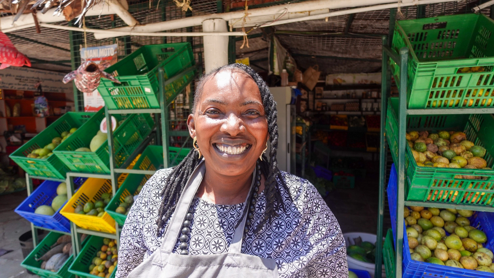
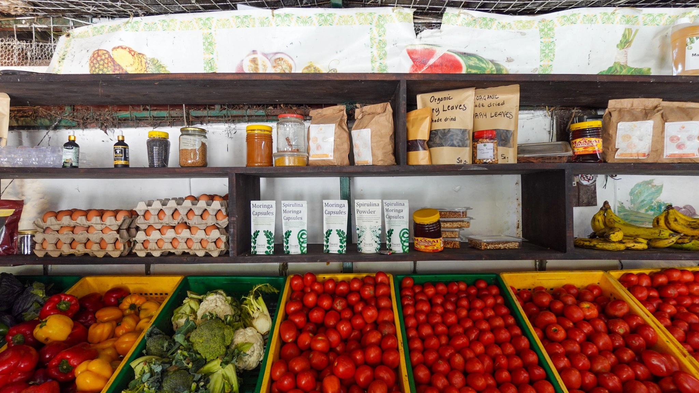
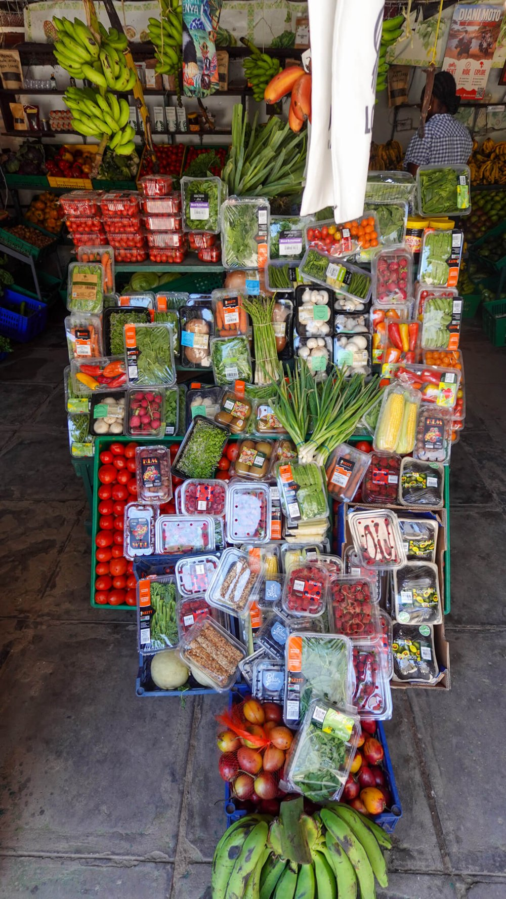
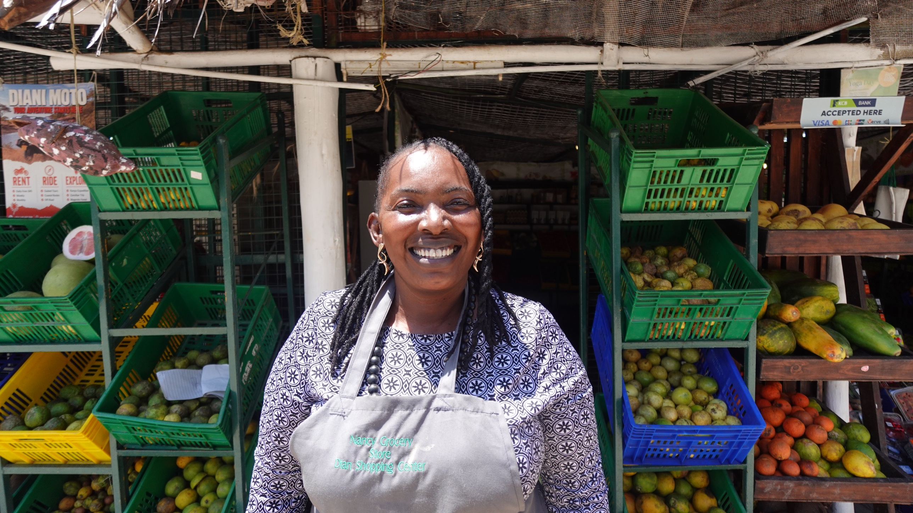

<!doctype html>
<html lang="en" data-theme="dark">
<head>
<meta charset="utf-8">
<meta name="viewport" content="width=device-width,initial-scale=1,viewport-fit=cover">
<title>Nancy Grocery — Diani &amp; Galu, Kenya</title>
<meta name="description" content="Fresh fruit, vegetables, eggs, nuts, spices and unique Kenyan products from Nancy Grocery, with shops at Diani Shopping Centre and Galu Square. Free delivery in Diani and Galu.">
<meta name="theme-color" content="#131915">
</head>
<body>

<link rel="preconnect" href="https://fonts.googleapis.com">
<link rel="preconnect" href="https://fonts.gstatic.com" crossorigin>
<link rel="stylesheet" href="https://fonts.googleapis.com/css2?family=Archivo:wdth,wght@62..125,100..900&family=DM+Mono:wght@400;500&display=swap">
<script src="https://cdnjs.cloudflare.com/ajax/libs/gsap/3.12.5/gsap.min.js"></script>
<style>
/* V4 — the "Cargo" V2 layout and type (Archivo condensed 800 + DM Mono, frosted panels with hard drop shadows), recoloured with the V3 palette: cream ground, forest-green glass panels, gold accents. */
:root{
  --ink:#F3ECDF; --ink2:#E9DFCB; --glass:rgba(31,68,51,.88); --white:#F6F0E3; --soft:#D9D1BC; --line:rgba(246,240,227,.36);
  --text:#1D2620; --muted:#67665A; --rule:#E0D5C0; --navbg:rgba(243,236,223,.92); --navline:#E0D5C0; --shadow:#13291F; --gold:#A27530; --gold-l:#E2C182;
  --wa:#1F4433; --wa2:#2A5841; --wa-ring:#E2C182; --gink:#1F4433;
  --display:'Archivo','Arial Narrow',sans-serif; --mono:'DM Mono',ui-monospace,'SFMono-Regular',Menlo,monospace;
  --gl:max(16px,env(safe-area-inset-left,0px)); --gr:max(16px,env(safe-area-inset-right,0px));
  --sh:14px;
  color-scheme:light;
}
@media (prefers-color-scheme:dark){:root:not([data-theme="light"]){
  --ink:#131915; --ink2:#28332C; --glass:rgba(28,57,43,.9); --white:#F6F0E3; --soft:#C9C3B0; --line:rgba(246,240,227,.3);
  --text:#ECE5D6; --muted:#A4A493; --rule:#2F3B34; --navbg:rgba(19,25,21,.9); --navline:#2F3B34; --shadow:#000000; --gold:#D4A85E; --gold-l:#E2C182;
  --wa:#2F6249; --wa2:#3A7457; --wa-ring:#E2C182; --gink:#9CCBAE; color-scheme:dark}}
:root[data-theme="dark"]{
  --ink:#131915; --ink2:#28332C; --glass:rgba(28,57,43,.9); --white:#F6F0E3; --soft:#C9C3B0; --line:rgba(246,240,227,.3);
  --text:#ECE5D6; --muted:#A4A493; --rule:#2F3B34; --navbg:rgba(19,25,21,.9); --navline:#2F3B34; --shadow:#000000; --gold:#D4A85E; --gold-l:#E2C182;
  --wa:#2F6249; --wa2:#3A7457; --wa-ring:#E2C182; --gink:#9CCBAE; color-scheme:dark}
*{box-sizing:border-box}
html{scroll-behavior:smooth}
body{margin:0;background:var(--ink);color:var(--text);font-family:var(--mono);-webkit-font-smoothing:antialiased;overflow-x:hidden}
body::before{content:"";position:fixed;inset:0 0 auto;height:env(safe-area-inset-top,0px);z-index:40;background:var(--ink)}
a{color:inherit}
p{margin:0}
button{font:inherit;color:inherit}
img{max-width:100%}
.sr{position:absolute;width:1px;height:1px;overflow:hidden;clip:rect(0 0 0 0);white-space:nowrap}

.photo{position:relative;overflow:hidden;background-color:#5A6B55;background-image:repeating-linear-gradient(135deg,rgba(255,255,255,.07) 0 1px,transparent 1px 14px)}
.panel{background:var(--glass);-webkit-backdrop-filter:blur(14px);backdrop-filter:blur(14px);border-radius:14px;color:var(--white);padding:16px 16px 14px;box-shadow:var(--sh) var(--sh) 0 0 var(--shadow)}
.title{margin:0;font-family:var(--display);font-stretch:62%;font-variation-settings:'wdth' 62;font-weight:800;line-height:.8;letter-spacing:-.02em;color:var(--white);text-wrap:balance}
.mono{font-family:var(--mono)}
.rows{margin:0;padding:0;list-style:none;border-top:1px solid var(--line)}
.row{display:grid;grid-template-columns:1fr auto;gap:16px;padding:12px 0;border-bottom:1px solid var(--line);font:400 14px/1.2 var(--mono);color:var(--white)}
.row b{font-weight:500}
.row a{text-decoration:none}
.row a:hover{text-decoration:underline}
.btns{display:grid;gap:10px;margin-top:12px}
.btn{display:flex;align-items:center;justify-content:center;height:36px;padding:0 14px;border:1px solid rgba(255,255,255,.45);border-radius:8px;background:rgba(255,255,255,.04);color:var(--white);font:400 15px var(--display);text-decoration:none;cursor:pointer;text-align:center}
.btn:hover{background:rgba(255,255,255,.16)}
:focus-visible{outline:2px solid var(--gold);outline-offset:2px}

/* nav */
.topnav{position:sticky;top:env(safe-area-inset-top,0px);z-index:30;display:flex;align-items:center;gap:12px;padding:12px var(--gr) 12px var(--gl);background:var(--navbg);-webkit-backdrop-filter:blur(14px);backdrop-filter:blur(14px);border-bottom:1px solid var(--navline)}
.tn-links{display:flex;gap:8px;flex-wrap:wrap}
.tn-links a{display:flex;align-items:center;height:40px;padding:0 16px;border:1px solid var(--navline);border-radius:8px;background:transparent;color:var(--text);font:500 15px var(--display);text-decoration:none;white-space:nowrap;transition:background-color .2s ease}
.tn-links a:hover{background:var(--ink2)}
.tn-links a.on{background:var(--wa);color:var(--white);border-color:var(--wa)}
.tn-right{margin-left:auto;display:flex;align-items:center;gap:10px}
.lang{display:flex;border:1px solid var(--navline);border-radius:8px;overflow:hidden}
.lang button{min-width:44px;height:40px;border:0;background:transparent;color:var(--text);font:500 12.5px var(--mono);letter-spacing:.06em;cursor:pointer}
.lang button+button{border-left:1px solid var(--navline)}
.lang button:hover{background:var(--ink2)}
.lang button.on{background:var(--wa);color:var(--white)}
.callb{width:44px;height:40px;display:flex;align-items:center;justify-content:center;border-radius:8px;background:var(--wa);color:var(--white);box-shadow:4px 4px 0 0 var(--shadow)}
.callb:hover{background:var(--wa2)}

/* hero */
.hero{display:block}
.hero-box{position:absolute;z-index:2;top:50%;left:50%;transform:translate(-50%,calc(-50% + var(--py,0px)));width:min(820px,calc(100% - 64px));padding:20px 22px 18px;transition:transform .9s cubic-bezier(.22,1,.36,1);will-change:transform}
@media (prefers-reduced-motion:reduce){.hero-box{transition:none}}
.hero-box .title{font-size:clamp(96px,10vw,150px);padding:6px 0 22px}
.hero-box .copy{display:grid;gap:12px;margin:0 0 6px;font-size:15px;line-height:1.6;max-width:700px}

/* local (photo bleeding under a fade, box on the right) */
.local{position:relative;overflow:hidden;background:var(--ink);min-height:700px;display:flex;align-items:center;padding:48px max(48px,var(--gr)) 48px var(--gl)}
.local-photo{position:absolute;inset:0}
.local-img{position:absolute;top:50%;left:-36%;width:140%;height:auto;max-width:none;transform:translateY(-44%);display:block}
.local-fade{position:absolute;inset:0;background:linear-gradient(90deg,transparent 0%,transparent 34%,color-mix(in srgb,var(--ink) 55%,transparent) 52%,color-mix(in srgb,var(--ink) 92%,transparent) 68%,var(--ink) 84%),linear-gradient(0deg,color-mix(in srgb,var(--ink) 55%,transparent) 0%,transparent 22%)}
.local-box{position:relative;z-index:2;margin-left:auto;width:min(560px,42%);padding:20px 22px 22px}
.local-box .title{font-size:clamp(56px,5vw,80px);padding:6px 0 18px}
.local-box p{font-size:15px;line-height:1.6}

/* delivery: photo with a panel that follows the scroll */
.deliv{background:var(--ink);position:relative}
.deliv > img{display:block;width:100%;height:auto}
.follow-wrap{position:absolute;inset:0;pointer-events:none;z-index:2;padding:16px var(--gr) 16px var(--gl)}
.follow{pointer-events:auto;will-change:transform;top:16px;width:min(680px,100%)}
.follow-wrap:not(.js-follow) .follow{position:sticky}
.follow .title{font-size:clamp(80px,7.4vw,116px);padding:6px 0 16px}
.follow p{font-size:16px;line-height:1.5}
.wa-zone{position:relative;z-index:2;padding:18px 16px 6px 0;display:inline-block}
.wa-btn{position:relative;display:inline-flex;align-items:center;gap:16px;height:64px;padding:0 26px 0 8px;border-radius:999px;background:var(--wa);color:var(--white);text-decoration:none;font:600 19px/1 var(--display);letter-spacing:.01em;box-shadow:8px 8px 0 0 var(--shadow);will-change:transform}
.wa-ring{position:absolute;inset:0;border-radius:999px;border:2px solid var(--wa-ring);pointer-events:none;opacity:0}
.wa-ic{display:flex;align-items:center;justify-content:center;width:48px;height:48px;border-radius:50%;background:var(--gold-l);color:#1F4433;flex:none}
.wa-txt{display:block;height:1.2em;overflow:hidden;line-height:1.2em}
.wa-roll{display:flex;flex-direction:column}
.wa-roll span{display:block;height:1.2em;white-space:nowrap}
.wa-arrow{display:inline-block}
.wa-btn:focus-visible{outline:3px solid var(--gold-l);outline-offset:4px}
.wa-zone:not(.gsap-on) .wa-roll{transition:transform .4s cubic-bezier(.22,1,.36,1)}
.wa-zone:not(.gsap-on) .wa-btn:hover .wa-roll{transform:translateY(-50%)}

/* selection */
.sel{background:var(--ink);padding:16px 30px 30px var(--gl);display:grid;align-items:stretch;grid-template-columns:repeat(2,minmax(0,1fr));gap:16px}
.sel > img{display:block;width:100%;height:960px;object-fit:cover;object-position:center 40%;border-radius:14px}
.sel .panel{display:flex;flex-direction:column;justify-content:space-between;gap:32px;min-width:0}
.sel .title{font-size:clamp(110px,11vw,190px);padding:6px 0 40px}
.cats{display:grid;grid-template-columns:repeat(5,minmax(0,1fr));border-top:1px solid var(--line);border-left:1px solid var(--line);margin:0 0 22px;padding:0;list-style:none}
.cat{position:relative;display:flex;flex-direction:column;justify-content:flex-end;padding:14px 12px;min-height:92px;border-right:1px solid var(--line);border-bottom:1px solid var(--line);color:var(--white);transition:background-color .35s ease;min-width:0}
.cat:hover{background:rgba(10,30,22,.28)}
.cat .w{font-family:var(--display);font-stretch:62%;font-variation-settings:'wdth' 62;font-weight:800;font-size:44px;line-height:.82;letter-spacing:-.01em;transition:transform .5s cubic-bezier(.22,1,.36,1)}
.cat:hover .w{transform:translateX(6px)}
.sel-list{margin:0;padding:14px 0 0;list-style:none;border-top:1px solid var(--line);columns:3;column-gap:20px;font-size:14px;line-height:1.75}

/* finds */
.sec{background:var(--ink);padding:24px var(--gr) 40px var(--gl)}
.sec-head{display:flex;justify-content:space-between;align-items:flex-end;gap:24px;flex-wrap:wrap;margin-bottom:16px}
.sec-head .title{padding:6px 0 10px}
.sec-head p{margin:0 0 10px;font-size:14px;line-height:1.5;max-width:400px}
.finds{display:grid;grid-template-columns:repeat(4,minmax(0,1fr));gap:16px}
.finds .panel{display:flex;flex-direction:column;gap:14px;min-width:0}
.finds h3{font-size:64px;padding:28px 0 2px}
.finds p{font-size:15px;line-height:1.55}

/* produce */
.pbar{display:flex;flex-direction:column;gap:14px;margin-bottom:16px}
.prow{display:flex;gap:10px;align-items:center}
.psearch{flex:1;position:relative;display:block}
.psearch svg{position:absolute;left:14px;top:50%;transform:translateY(-50%);opacity:.85;pointer-events:none}
.psearch input{width:100%;height:46px;padding:0 14px 0 42px;border:1px solid rgba(255,255,255,.45);border-radius:8px;background:rgba(10,30,22,.28);color:var(--white);font:400 14px var(--mono);outline:none}
.psearch input::placeholder{color:var(--soft)}
.psearch input:focus{border-color:var(--gold-l);background:rgba(10,30,22,.45)}
.psort{height:46px;padding:0 12px;border:1px solid rgba(255,255,255,.45);border-radius:8px;background:rgba(10,30,22,.28);color:var(--white);font:400 14px var(--mono)}
.psort option{color:#1D2620;background:#FBF7EF}
.pchips{display:flex;gap:8px;flex-wrap:wrap}
.pchip{height:38px;padding:0 14px;border:1px solid rgba(255,255,255,.45);border-radius:999px;background:transparent;color:var(--white);font:400 13.5px var(--mono);cursor:pointer;transition:background-color .2s ease;white-space:nowrap}
.pchip:hover{background:rgba(255,255,255,.14)}
.pchip.on{background:var(--gold-l);color:#1D2620;border-color:var(--gold-l)}
.pchips.sub .pchip{height:32px;font-size:12.5px;border-style:dashed}
.pchips.sub .pchip.on{border-style:solid}
.pcount{margin:0;font-size:13px;color:#F1F0EC;border-top:1px solid var(--line);padding-top:12px}
.pgrid{display:grid;gap:28px 16px;grid-template-columns:repeat(4,minmax(0,1fr))}
.pgrid.five{grid-template-columns:repeat(5,minmax(0,1fr))}
.pitem{display:flex;flex-direction:column;gap:10px;min-width:0}
.pimg{position:relative;display:block;width:100%;aspect-ratio:1/1;padding:0;border:0;border-radius:14px;overflow:hidden;background:var(--ink2);cursor:pointer}
.pimg img{position:absolute;inset:0;width:100%;height:100%;object-fit:cover;transition:transform .6s cubic-bezier(.22,1,.36,1),filter .3s ease}
.pimg:hover img{transform:scale(1.04);filter:brightness(1.06)}
.pword{position:absolute;inset:0;display:flex;align-items:flex-end;padding:14px;text-align:left;background-color:var(--glass);background-image:linear-gradient(rgba(255,255,255,.10) 1px,transparent 1px),linear-gradient(90deg,rgba(255,255,255,.10) 1px,transparent 1px);background-size:32px 32px;color:var(--white);font-family:var(--display);font-stretch:62%;font-variation-settings:'wdth' 62;font-weight:800;font-size:46px;line-height:.86;letter-spacing:-.01em}
.ucap{border-top:1px solid var(--rule);padding-top:10px;font:400 13.5px/1.3 var(--mono);color:var(--text)}
.ucap b{display:block;font-weight:500}
.ucap span{display:block;color:var(--muted);margin-top:3px}
.pb{display:block;font-size:11px;letter-spacing:.12em;text-transform:uppercase;color:var(--gold);margin-bottom:4px}
.pov .pb{color:var(--gold-l)}
.pmore{align-self:flex-start;display:inline-flex;align-items:center;min-height:32px;padding:0;border:0;background:none;color:var(--gink);font:400 13px var(--mono);text-decoration:underline;text-underline-offset:3px;cursor:pointer}
.pempty{text-align:center;padding:36px 20px;display:flex;flex-direction:column;align-items:center;gap:12px;margin-bottom:16px}
.center-btn{grid-template-columns:minmax(0,320px);justify-content:center;margin-top:28px}
.center-btn .btn{height:44px;background:var(--glass);color:var(--white);border-color:transparent}

/* unique */
.ugrid{display:grid;gap:28px 16px;grid-template-columns:repeat(4,minmax(0,1fr))}
.uitem{display:flex;flex-direction:column;gap:10px;text-decoration:none;color:var(--text);background:none;border:0;padding:0;text-align:left;cursor:pointer;min-width:0}
.uitem img{display:block;width:100%;aspect-ratio:1/1;object-fit:cover;border-radius:14px;background:var(--ink2)}
.uitem:hover img{filter:brightness(1.06)}
.uq-title{font-size:clamp(72px,8vw,120px);padding:6px 0;max-width:900px}
.uq-title span{font-size:.3em;letter-spacing:0;white-space:nowrap;vertical-align:middle}

/* visit / maps */
.visit{min-height:820px;background:#6E6A5E url('v4/visit-bg.jpg') center / cover no-repeat;padding:16px var(--gr) 16px var(--gl);display:flex;flex-direction:column;gap:16px}
.visit-intro{margin-bottom:160px;width:min(640px,100%)}
.visit-intro .title{font-size:clamp(88px,10vw,150px);padding:6px 0 22px}
.maps{display:grid;grid-template-columns:repeat(2,minmax(0,1fr));gap:16px}
.mapcard{position:relative;display:flex;flex-direction:column;justify-content:space-between;gap:20px;min-height:440px;padding:20px;text-decoration:none;color:var(--white);border-radius:14px;overflow:hidden;background-color:var(--glass);-webkit-backdrop-filter:blur(14px);backdrop-filter:blur(14px);background-image:linear-gradient(rgba(255,255,255,.10) 1px,transparent 1px),linear-gradient(90deg,rgba(255,255,255,.10) 1px,transparent 1px);background-size:44px 44px;box-shadow:var(--sh) var(--sh) 0 0 var(--shadow);min-width:0}
.mapcard .go,.go{display:flex;align-items:center;justify-content:center;height:44px;border:1px solid rgba(255,255,255,.45);border-radius:8px;background:rgba(10,30,22,.3);font:400 15px var(--display);color:var(--white);text-decoration:none}
.mapcard .go:hover,.go:hover{background:rgba(10,30,22,.5)}
.mapcard .top{display:flex;justify-content:space-between;align-items:flex-start;gap:12px}
.mapcard .bot{display:flex;flex-direction:column;gap:14px}
.mapcard .title{font-size:88px}
.mapcard{justify-content:flex-start;min-height:0;gap:18px}
.mapframe{position:relative;aspect-ratio:16/10;border-radius:10px;overflow:hidden;background:var(--ink2);border:1px solid var(--line)}
.mapframe iframe{position:absolute;inset:0;width:100%;height:100%;border:0;display:block}
:root[data-theme="dark"] .mapframe iframe{filter:invert(.9) hue-rotate(180deg) saturate(.75) brightness(.95) contrast(.92)}
@media (prefers-color-scheme:dark){:root:not([data-theme="light"]) .mapframe iframe{filter:invert(.9) hue-rotate(180deg) saturate(.75) brightness(.95) contrast(.92)}}

/* about */
.ab-hero{min-height:760px;background:#6B5A2E url('v4/about-hero.jpg') center / cover no-repeat}
.ab-hero .copy{font-size:15px;line-height:1.6;max-width:640px;margin:0 0 6px}
.ab-story .local-img{left:-8%;width:112%;transform:translateY(-50%)}
.ab-story{min-height:760px}
.ab-story .local-box{width:min(600px,46%)}
.ab-story .title{font-size:clamp(72px,7vw,110px)}
.ab-story .copy{display:grid;gap:14px;font-size:15px;line-height:1.6}
.ab-hello{min-height:720px;background:#2F5A3A url('v4/about-hello.jpg') center / cover no-repeat;padding:16px var(--gr) 16px var(--gl);display:flex;align-items:flex-end}
.ab-hello .panel{width:min(640px,100%)}
.ab-hello .title{font-size:clamp(72px,7vw,110px);padding:6px 0 18px}
.ab-hello p{margin:0 0 18px;font-size:15px;line-height:1.6}
.ab-hello .go{display:inline-flex;padding:0 22px}

/* contact page */
.cv-hero{min-height:900px;background:#6E6A5E url('v4/visit-hero.jpg') center top / cover no-repeat}
.cv-hero .hero-box{width:fit-content;max-width:calc(100% - 64px);padding:20px 26px 16px}
.cv-hero .title{font-size:clamp(96px,9vw,136px);padding:6px 0 16px}
.cv-rows .row span:last-child{text-align:right}
.visit.bare{min-height:0;padding-bottom:48px}

/* footer + dock + overlay */
footer{padding:28px max(76px,var(--gr)) calc(32px + env(safe-area-inset-bottom,0px)) var(--gl);background:var(--ink);border-top:1px solid var(--rule);display:flex;flex-wrap:wrap;justify-content:space-between;align-items:flex-end;gap:16px;font:400 13px/1.6 var(--mono);color:var(--muted)}
footer .title{font-size:64px;line-height:.8;color:var(--gink)}
.dock{position:fixed;right:calc(16px + env(safe-area-inset-right,0px));bottom:calc(16px + env(safe-area-inset-bottom,0px));z-index:10;display:flex;flex-direction:column;gap:2px;padding:6px;border-radius:12px;background:var(--glass);-webkit-backdrop-filter:blur(14px);backdrop-filter:blur(14px)}
.dock a{width:40px;height:40px;display:flex;align-items:center;justify-content:center;border-radius:8px;color:var(--white)}
.dock a:hover{background:rgba(255,255,255,.16)}
.pov{position:fixed;inset:0;z-index:50;display:flex;align-items:center;justify-content:center;padding:24px}
.pov-bg{position:absolute;inset:0;background:rgba(20,30,24,.55);border:0;padding:0;cursor:pointer}
.pov-card{position:relative;display:grid;grid-template-columns:1fr 1fr;gap:20px;width:min(860px,100%);max-height:calc(100% - 32px);overflow:auto}
.pov-img{position:relative;aspect-ratio:1/1;border-radius:10px;overflow:hidden;background:var(--ink2)}
.pov-img img{position:absolute;inset:0;width:100%;height:100%;object-fit:cover}
.pov-txt{display:flex;flex-direction:column;gap:12px;padding:8px 4px 4px;min-width:0}
.pov-txt .title{font-size:64px;padding:4px 0 6px}
.pov-x{position:absolute;top:10px;right:10px;width:40px;height:40px;border:1px solid rgba(255,255,255,.45);border-radius:8px;background:rgba(10,30,22,.45);color:var(--white);font:400 22px/1 var(--mono);cursor:pointer;z-index:2}
.pov-x:hover{background:rgba(10,30,22,.7)}

@media (min-width:781px){.home-hero .hero-box{width:min(580px,calc(100% - 64px))}}
/* tablet */
@media (max-width:1100px){
  .finds{grid-template-columns:repeat(2,minmax(0,1fr))}
  .pgrid.five{grid-template-columns:repeat(4,minmax(0,1fr))}
  .sel{grid-template-columns:1fr;padding-right:var(--gr)}
  .sel > img{height:620px}
  .local-box{width:min(560px,56%)}
}
/* phone (from the V2 mobile boards) */
@media (max-width:780px){
  :root{--sh:8px}
  .panel{border-radius:12px;padding:12px}
  .topnav{flex-wrap:wrap;gap:8px;padding:8px var(--gr) 8px var(--gl)}
  .tn-right{order:1;width:100%;justify-content:flex-end;margin-left:0}
  .tn-links{order:2;width:100%;flex-wrap:nowrap;overflow-x:auto;scrollbar-width:none;gap:6px;padding-bottom:2px}
  .tn-links::-webkit-scrollbar{display:none}
  .tn-links a{height:38px;padding:0 12px;font-size:14px}
  .lang button{height:38px}
  .callb{height:38px}
  .hero-box{width:calc(100% - 28px)}
  .hero-box .title{font-size:clamp(64px,22vw,92px);padding:4px 0 14px}
  .hero-box .copy{font-size:13.5px;line-height:1.55;gap:10px}
  .home-hero{min-height:844px!important;background-position:70% center!important}
  .local{display:block;min-height:0;padding:0 var(--gr) 10px var(--gl)}
  .local-photo{position:relative;height:400px;overflow:hidden;margin:0 calc(-1 * var(--gr)) 0 calc(-1 * var(--gl))}
  .local-photo .local-img,.ab-story .local-photo .local-img{position:absolute;inset:0;left:0;top:0;width:100%;height:100%;object-fit:cover;object-position:46% 30%;transform:none}
  .local-photo::after{content:"";position:absolute;inset:0;background:linear-gradient(180deg,transparent 55%,color-mix(in srgb,var(--ink) 85%,transparent) 88%,var(--ink) 100%)}
  .local-fade{display:none}
  .local-box,.ab-story .local-box{width:auto;margin:-96px 0 0}
  .local-box .title{font-size:52px;padding:4px 0 12px}
  .ab-story .title{font-size:64px}
  .local-box p,.ab-story .copy{font-size:13.5px;line-height:1.55}
  .deliv > img{height:680px;object-fit:cover;object-position:38% center}
  .follow-wrap{padding:10px var(--gr) 10px var(--gl)}
  .follow{top:10px}
  .follow .title{font-size:clamp(52px,18vw,72px);padding:4px 0 12px}
  .follow p{font-size:13px}
  .wa-zone{padding:14px 0 2px}
  .wa-btn{gap:12px;height:60px;padding:0 22px 0 8px;font-size:18px;box-shadow:6px 6px 0 0 var(--shadow)}
  .wa-ic{width:44px;height:44px}
  .sel{padding:10px var(--gr) 10px var(--gl);gap:10px}
  .sel > img{height:560px;border-radius:12px}
  .sel .title{font-size:clamp(64px,22vw,88px);padding:4px 0 24px}
  .cats{grid-template-columns:repeat(2,minmax(0,1fr));margin-bottom:14px}
  .cat{padding:10px;min-height:76px}
  .cat .w{font-size:46px}
  .sel-list{columns:2;font-size:13px}
  .sec{padding:16px var(--gr) 32px var(--gl)}
  .sec-head .title{font-size:clamp(56px,18vw,96px)!important}
  .finds{grid-template-columns:1fr;gap:12px}
  .finds h3{font-size:52px;padding:16px 0 2px}
  .prow{flex-direction:column;align-items:stretch}
  .psort{width:100%}
  .pchips{flex-wrap:nowrap;overflow-x:auto;scrollbar-width:none}
  .pchips::-webkit-scrollbar{display:none}
  .pchip{flex:none}
  .pgrid,.pgrid.five,.ugrid{grid-template-columns:repeat(2,minmax(0,1fr));gap:18px 10px}
  .pimg,.uitem img{border-radius:12px}
  .pword{font-size:32px;padding:10px}
  .ucap{font-size:12.5px}
  .uq-title{font-size:clamp(52px,16vw,72px)!important}
  .visit{min-height:0;padding:10px var(--gr) 24px var(--gl)}
  .visit-intro{margin-bottom:240px}
  .visit-intro .title{font-size:clamp(64px,20vw,88px)}
  .maps{grid-template-columns:1fr;gap:12px}
  .mapcard{min-height:0}
  .mapframe{aspect-ratio:4/3}
  .mapcard .title{font-size:72px}
  .ab-hero,.cv-hero{min-height:720px}
  .ab-hello{min-height:620px;padding:10px var(--gr) 10px var(--gl)}
  .ab-hello .title{font-size:clamp(52px,16vw,72px)}
  .cv-hero .hero-box{width:calc(100% - 28px);max-width:none}
  .cv-hero .title{font-size:clamp(64px,20vw,96px)}
  .row{font-size:13px;gap:12px;padding:10px 0}
  footer .title{font-size:52px}
  .dock{right:calc(10px + env(safe-area-inset-right,0px));bottom:calc(10px + env(safe-area-inset-bottom,0px));padding:4px}
  .dock a{width:44px;height:44px}
  .pov{align-items:flex-end;padding:0}
  .pov-card{grid-template-columns:minmax(0,1fr);gap:12px;width:100%;max-height:92%;border-radius:14px 14px 0 0;box-shadow:none;padding-bottom:calc(14px + env(safe-area-inset-bottom,0px))}
  .pov-img{aspect-ratio:4/3}
  .pov-txt .title{font-size:48px}
}
</style>

<div id="app"></div>

<script>
const T = {"en": {"ffTitle": "Beyond fruit & veg", "ffSub": "Four shelves you won't find in an ordinary grocery.", "ff1": "Kenyan coffee", "ff1d": "Hand-roasted Arabica beans from Kenyan roasters.", "ff2": "Loose-leaf tea", "ff2d": "Purple tea from Meru, banana tea and more.", "ff3": "Superfoods", "ff3d": "Moringa, spirulina and avocado leaf powders.", "ff4": "Natural care", "ff4d": "Baobab, neem and castor oils, soaps and body butter.", "herbT": "Herbs", "selSub": "Widest selection in Diani for sure!", "selTitle": "Everything you need", "vIntro": "Two shops in Diani, open 7 days a week.", "uqGift": "(great for gifts too!)", "prIntro": "Our large range of produce easily beats the supermarket all year round. Stock changes with the season. If you want to know if we have what you're looking for, send us a message :)", "k0": "Home", "k1": "Our produce", "k2": "Only at Nancy's", "k3": "About", "k4": "Visit & contact", "k5": "Nancy", "k6": "Grocery store, Diani & Galu, Kenya.", "k7": "Fruit, coffee, bread and small good things. Open 7 days a week.", "k8": "Oct. 16, 2026", "k9": "Ngowe mangoes, first of the season", "k10": "Kwale County, 1 kg", "k11": "In store", "k12": "Oct. 17, 2026", "k13": "Saturday sourdough bake", "k14": "Country loaf, 800 g", "k15": "Pre-order", "k16": "Oct. 18, 2026", "k17": "Taro bubble tea returns", "k18": "Galu Square counter", "k19": "Sold out", "k20": "Oct. 24, 2026", "k21": "Villa season baskets open", "k22": "Pre-arrival stocking, Diani", "k23": "Book", "k24": "Shop", "k25": "Visit", "k26": "Widest Selection", "k27": "(Fresh everyday)", "k28": "Fruit", "k29": "Veg", "k30": "Nuts", "k31": "Spices", "k32": "Bananas", "k33": "Red bananas", "k34": "Plantains", "k35": "Tree tomatoes", "k36": "Avocados", "k37": "Strawberries", "k38": "Raspberries", "k39": "Blueberries", "k40": "Grapes", "k41": "Kiwi fruit", "k42": "Melon", "k43": "Oranges", "k44": "Mangoes", "k45": "Tomatoes", "k46": "Cherry tomatoes", "k47": "Sweet peppers", "k48": "Mini peppers", "k49": "Carrots", "k50": "Radishes", "k51": "Mushrooms", "k52": "Asparagus", "k53": "Spring onions", "k54": "Leeks", "k55": "Sweetcorn", "k56": "Baby corn", "k57": "Mangetout", "k58": "Sugar snap peas", "k59": "Green beans", "k60": "Tenderstem broccoli", "k61": "Courgettes", "k62": "Cabbage", "k63": "Red cabbage", "k64": "Lettuce", "k65": "Spinach", "k66": "Rocket", "k67": "Micro greens", "k68": "Herbs", "k69": "Onions", "k70": "Garlic", "k71": "+ many more", "k72": "We stock the widest selection of fresh fruit and vegetables.", "k73": "Everything we usually stock across both shops. Stock changes with the season, so call or WhatsApp to check what's in today.", "k74": "Search what we stock", "k75": "Sort", "k76": "Try a shorter word like “mango” or “honey”. If you can't find something, ask us on WhatsApp and we'll tell you if we have it.", "k77": "Clear search", "k78": "Ask on WhatsApp", "k79": "Diani · Main branch", "k80": "Mon–Tue 07:00–19:00", "k81": "Wed–Sat 09:00–19:00", "k82": "Sun 07:00–16:00", "k83": "Galu", "k84": "Main branch", "k85": "Diani Shopping Centre, next to Muthaiga Supermarket, Diani Beach Road", "k86": "Open in Google Maps →", "k87": "Unique items only available at Nancy Grocery", "k88": "Oils, teas, honey, soap and superfoods from small makers, on Nancy's shelves.", "k89": "See all →", "k90": "Free Delivery in Diani and Galu", "k91": "Stock your villa or order your groceries", "k92": "in advance on WhatsApp.", "k93": "Order on WhatsApp", "k94": "Villas", "k95": "Tell us when you land. We shop the morning you arrive and leave the kitchen ready. Nancy spricht Deutsch.", "k96": "Basket 01", "k97": "Arrival Essentials", "k98": "Water, milk, bread, eggs, fruit, coffee", "k99": "Basket 02", "k100": "Healthy Week", "k101": "Greens, juices, yoghurt, herbal tea", "k102": "Basket 03", "k103": "Coffee & Breakfast", "k104": "House roast, sourdough, mango, honey", "k105": "Basket 04", "k106": "Your own list", "k107": "Send it on WhatsApp, we do the rest", "k108": "Send", "k109": "Enquire", "k110": "M-Pesa · Visa · Mastercard · Verve · UnionPay · JCB · Contactless · Cash", "k111": "© 2026 — Karibu tena.", "k112": "Stock changes with the season. Call or WhatsApp to check what's in today.", "k113": "Call 0729 777 858", "c_all": "All", "c_produce": "Fruit & veg", "c_eggs": "Eggs", "c_drinks": "Drinks", "c_snacks": "Snacks", "c_unique": "Only at Nancy's", "g_all": "All fruit & veg", "g_fruit": "Fruit", "g_veg": "Vegetables", "g_herbs": "Herbs, garlic & ginger", "item": "item", "items": "items", "details": "Details", "seeAll": "See all", "showMore": "Show more", "featured": "Featured", "az": "Name A–Z", "nothing": "Nothing matches", "askHave": "Hi Nancy, do you have", "hTitle": "Nancy Grocery", "hP1": "Nancy Grocery is the best place to buy fruit and veg (and much more) in Diani, Kenya.", "hP2": "Our aim is to provide the widest selection of fresh fruit, veg, nuts, spices and all kinds of other unique products to the people of Diani.", "hP3": "Today we have two branches - the original location in Diani Shopping Center and our new branch in Galu square.", "slTitle": "Looking for a better place to buy groceries in Diani?", "slP": "Buy all your fruit and vegetables, eggs, honey, tea and coffee, nuts, spices and lots of other health and wellness products as well.", "uqTitle": "Unique products from all over Kenya", "k123": "← Home", "k118": "Unique items", "k124": "Only available at Nancy Grocery. 19 products from small makers, picked by Nancy. Ask in store or order on WhatsApp.", "k125": "Organic Moringa Powder", "k126": "Back home", "abTitle": "About us", "abLead": "A family grocery on the south coast, with two shops in Diani and Galu.", "stTitle": "Our story", "stP1": "Nancy Grocery Store began with one simple idea: the people of Diani deserve fresh, good-quality food close to home. Nancy picks what goes on the shelves herself, from crates of ripe mangoes and pawpaw to the herbs and berries our regulars ask for.", "stP2": "Today we run two shops, our main branch at Diani Shopping Centre and a second shop at Galu Square. Alongside everyday groceries, you'll find oils, teas and natural products from small makers that are hard to find anywhere else on the coast.", "hiTitle": "Come in and say hello", "hiP": "Two shops in Diani, open 7 days a week. Karibu sana.", "hiBtn": "Plan your visit →", "cvTitle": "Visit & contact", "cvCall": "Call", "cvWa": "WhatsApp", "cvMail": "Email", "cvDel": "Delivery", "cvDelV": "Free across Diani and Galu", "cvPay": "Pay with", "cvStore": "Diani shop"}, "sw": {"ffTitle": "Zaidi ya matunda na mboga", "ffSub": "Rafu nne ambazo huwezi kuzipata kwenye duka la kawaida.", "ff1": "Kahawa ya Kenya", "ff1d": "Kahawa ya Arabica iliyokaangwa kwa mkono na wakaangaji wa Kenya.", "ff2": "Chai ya majani", "ff2d": "Chai ya zambarau kutoka Meru, chai ya ndizi na zaidi.", "ff3": "Vyakula bora", "ff3d": "Unga wa moringa, spirulina na majani ya parachichi.", "ff4": "Huduma asilia", "ff4d": "Mafuta ya mbuyu, mwarobaini na mbarika, sabuni na siagi ya mwili.", "herbT": "Mimea", "selSub": "Uchaguzi mpana zaidi Diani, bila shaka!", "selTitle": "Kila kitu unachohitaji", "vIntro": "Maduka mawili Diani, tunafungua siku 7 kwa wiki.", "uqGift": "(nzuri kwa zawadi pia!)", "prIntro": "Aina zetu nyingi za matunda na mboga zinashinda supamaketi mwaka mzima. Bidhaa hubadilika kulingana na msimu. Ukitaka kujua kama tuna unachotafuta, tutumie ujumbe :)", "k0": "Nyumbani", "k1": "Bidhaa zetu", "k2": "Kwa Nancy pekee", "k3": "Kuhusu", "k4": "Tutembelee", "k5": "Nancy", "k6": "Duka la vyakula, Diani na Galu, Kenya.", "k7": "Matunda, kahawa, mkate na vitu vidogo vizuri. Tunafungua siku 7 kwa wiki.", "k8": "16 Okt. 2026", "k9": "Maembe ya Ngowe, ya kwanza msimu huu", "k10": "Kaunti ya Kwale, kg 1", "k11": "Dukani", "k12": "17 Okt. 2026", "k13": "Mkate wa chachu wa Jumamosi", "k14": "Mkate wa kienyeji, g 800", "k15": "Agiza mapema", "k16": "18 Okt. 2026", "k17": "Chai ya bubble ya taro imerudi", "k18": "Kaunta ya Galu Square", "k19": "Imeisha", "k20": "24 Okt. 2026", "k21": "Vikapu vya msimu wa villa vimefunguliwa", "k22": "Kujaza jiko kabla ya kuwasili, Diani", "k23": "Weka nafasi", "k24": "Duka", "k25": "Tembelea", "k26": "Uchaguzi mpana zaidi", "k27": "(Mbichi kila siku)", "k28": "Matunda", "k29": "Mboga", "k30": "Karanga", "k31": "Viungo", "k32": "Ndizi", "k33": "Ndizi nyekundu", "k34": "Ndizi za kupika", "k35": "Nyanya mti", "k36": "Maparachichi", "k37": "Stroberi", "k38": "Rasiberi", "k39": "Blueberi", "k40": "Zabibu", "k41": "Kiwi", "k42": "Tikiti", "k43": "Machungwa", "k44": "Maembe", "k45": "Nyanya", "k46": "Nyanya ndogo", "k47": "Pilipili hoho", "k48": "Pilipili hoho ndogo", "k49": "Karoti", "k50": "Figili", "k51": "Uyoga", "k52": "Asparagasi", "k53": "Vitunguu majani", "k54": "Liki", "k55": "Mahindi matamu", "k56": "Mahindi machanga", "k57": "Mbaazi za ganda", "k58": "Njegere tamu", "k59": "Maharagwe mabichi", "k60": "Brokoli", "k61": "Zukini", "k62": "Kabichi", "k63": "Kabichi nyekundu", "k64": "Saladi", "k65": "Spinachi", "k66": "Roketi", "k67": "Mboga changa", "k68": "Mimea ya viungo", "k69": "Vitunguu", "k70": "Kitunguu saumu", "k71": "+ na mengine mengi", "k72": "Tuna uchaguzi mpana zaidi wa matunda na mboga mbichi.", "k73": "Kila kitu tunachouza kwa kawaida katika maduka yote mawili. Bidhaa hubadilika kulingana na msimu, kwa hivyo piga simu au tuma WhatsApp kuuliza kilichopo leo.", "k74": "Tafuta tunachouza", "k75": "Panga", "k76": "Jaribu neno fupi kama “embe” au “asali”. Usipopata kitu, tuulize WhatsApp tukuambie kama tunacho.", "k77": "Futa utafutaji", "k78": "Uliza kwa WhatsApp", "k79": "Diani · Tawi kuu", "k80": "Jtt–Jnn 07:00–19:00", "k81": "Jtn–Jmos 09:00–19:00", "k82": "Jpili 07:00–16:00", "k83": "Galu", "k84": "Tawi kuu", "k85": "Diani Shopping Centre, karibu na Muthaiga Supermarket, Diani Beach Road", "k86": "Fungua kwenye Google Maps →", "k87": "Bidhaa za kipekee zinazopatikana Nancy Grocery pekee", "k88": "Mafuta, chai, asali, sabuni na vyakula bora kutoka kwa watengenezaji wadogo, kwenye rafu za Nancy.", "k89": "Tazama zote →", "k90": "Usafirishaji bure Diani na Galu", "k91": "Jaza villa yako au agiza mahitaji yako", "k92": "mapema kwa WhatsApp.", "k93": "Agiza kwa WhatsApp", "k94": "Villa", "k95": "Tuambie unapowasili. Tunanunua asubuhi ya siku unayofika na kuacha jiko tayari. Nancy spricht Deutsch.", "k96": "Kikapu 01", "k97": "Mahitaji ya kuwasili", "k98": "Maji, maziwa, mkate, mayai, matunda, kahawa", "k99": "Kikapu 02", "k100": "Wiki ya afya", "k101": "Mboga za majani, juisi, mtindi, chai ya mitishamba", "k102": "Kikapu 03", "k103": "Kahawa na kifungua kinywa", "k104": "Kahawa yetu, mkate wa chachu, embe, asali", "k105": "Kikapu 04", "k106": "Orodha yako mwenyewe", "k107": "Itume kwa WhatsApp, tutafanya mengine", "k108": "Tuma", "k109": "Uliza", "k110": "M-Pesa · Visa · Mastercard · Verve · UnionPay · JCB · Malipo ya kugusa · Pesa taslimu", "k111": "© 2026 — Karibu tena.", "k112": "Bidhaa hubadilika kulingana na msimu. Piga simu au tuma WhatsApp kuuliza kilichopo leo.", "k113": "Piga 0729 777 858", "c_all": "Zote", "c_produce": "Matunda na mboga", "c_eggs": "Mayai", "c_drinks": "Vinywaji", "c_snacks": "Vitafunio", "c_unique": "Kwa Nancy pekee", "g_all": "Matunda na mboga zote", "g_fruit": "Matunda", "g_veg": "Mboga", "g_herbs": "Viungo, kitunguu saumu na tangawizi", "item": "bidhaa", "items": "bidhaa", "details": "Maelezo", "seeAll": "Tazama zote", "showMore": "Onyesha zaidi", "featured": "Zilizochaguliwa", "az": "Jina A–Z", "nothing": "Hakuna kinacholingana na", "askHave": "Habari Nancy, je, mna", "hTitle": "Nancy Grocery", "hP1": "Nancy Grocery ndiyo mahali bora pa kununua matunda na mboga (na mengi zaidi) Diani, Kenya.", "hP2": "Lengo letu ni kuwapatia watu wa Diani uchaguzi mpana zaidi wa matunda mabichi, mboga, karanga, viungo na kila aina ya bidhaa nyingine za kipekee.", "hP3": "Leo tuna matawi mawili - duka la asili katika Diani Shopping Center na tawi letu jipya Galu Square.", "slTitle": "Unatafuta mahali bora pa kununua vyakula Diani?", "slP": "Nunua matunda na mboga zako zote, mayai, asali, chai na kahawa, karanga, viungo na bidhaa nyingine nyingi za afya na ustawi pia.", "uqTitle": "Bidhaa za kipekee kutoka kila pembe ya Kenya", "k123": "← Nyumbani", "k118": "Bidhaa za kipekee", "k124": "Zinapatikana Nancy Grocery pekee. Bidhaa 19 kutoka kwa watengenezaji wadogo, zilizochaguliwa na Nancy. Uliza dukani au agiza kwa WhatsApp.", "k125": "Unga wa Moringa Asilia", "k126": "Rudi nyumbani", "abTitle": "Kuhusu sisi", "abLead": "Duka la familia pwani ya kusini, lenye maduka mawili Diani na Galu.", "stTitle": "Hadithi yetu", "stP1": "Nancy Grocery Store ilianza na wazo moja rahisi: watu wa Diani wanastahili chakula kibichi na bora karibu na nyumbani. Nancy mwenyewe huchagua kinachowekwa rafuni, kuanzia makreti ya maembe na mapapai yaliyoiva hadi viungo na beri ambazo wateja wetu huomba.", "stP2": "Leo tuna maduka mawili: tawi kuu katika Diani Shopping Centre na duka la pili Galu Square. Pamoja na mahitaji ya kila siku, utapata mafuta, chai na bidhaa asilia kutoka kwa wazalishaji wadogo, ambazo ni adimu kupatikana kwingine pwani.", "hiTitle": "Karibu dukani utusalimie", "hiP": "Maduka mawili Diani, tunafungua siku 7 kwa wiki. Karibu sana.", "hiBtn": "Panga ziara yako →", "cvTitle": "Tutembelee", "cvCall": "Piga simu", "cvWa": "WhatsApp", "cvMail": "Barua pepe", "cvDel": "Usafirishaji", "cvDelV": "Bure kote Diani na Galu", "cvPay": "Lipa kwa", "cvStore": "Duka la Diani"}, "de": {"ffTitle": "Mehr als Obst & Gemüse", "ffSub": "Vier Regale, die du in keinem gewöhnlichen Laden findest.", "ff1": "Kenianischer Kaffee", "ff1d": "Handgeröstete Arabica-Bohnen von kenianischen Röstereien.", "ff2": "Loser Tee", "ff2d": "Lila Tee aus Meru, Bananentee und mehr.", "ff3": "Superfoods", "ff3d": "Moringa-, Spirulina- und Avocadoblattpulver.", "ff4": "Natürliche Pflege", "ff4d": "Baobab-, Neem- und Rizinusöl, Seifen und Körperbutter.", "herbT": "Kräuter", "selSub": "Die größte Auswahl in Diani, ganz sicher!", "selTitle": "Alles, was du brauchst", "vIntro": "Zwei Läden in Diani, 7 Tage die Woche geöffnet.", "uqGift": "(auch toll als Geschenk!)", "prIntro": "Unsere große Auswahl an Obst und Gemüse schlägt den Supermarkt das ganze Jahr über. Das Angebot wechselt mit der Saison. Wenn du wissen möchtest, ob wir haben, was du suchst, schreib uns eine Nachricht :)", "k0": "Start", "k1": "Unser Sortiment", "k2": "Nur bei Nancy", "k3": "Über uns", "k4": "Besuch & Kontakt", "k5": "Nancy", "k6": "Lebensmittelladen, Diani & Galu, Kenia.", "k7": "Obst, Kaffee, Brot und kleine gute Dinge. 7 Tage die Woche geöffnet.", "k8": "16. Okt. 2026", "k9": "Ngowe-Mangos, die ersten der Saison", "k10": "Kwale County, 1 kg", "k11": "Im Laden", "k12": "17. Okt. 2026", "k13": "Sauerteig-Backtag am Samstag", "k14": "Landbrot, 800 g", "k15": "Vorbestellen", "k16": "18. Okt. 2026", "k17": "Taro-Bubble-Tea ist zurück", "k18": "Theke am Galu Square", "k19": "Ausverkauft", "k20": "24. Okt. 2026", "k21": "Villa-Saisonkörbe jetzt buchbar", "k22": "Einkauf vor Ihrer Ankunft, Diani", "k23": "Buchen", "k24": "Shop", "k25": "Besuch", "k26": "Größte Auswahl", "k27": "(Jeden Tag frisch)", "k28": "Obst", "k29": "Gemüse", "k30": "Nüsse", "k31": "Gewürze", "k32": "Bananen", "k33": "Rote Bananen", "k34": "Kochbananen", "k35": "Baumtomaten", "k36": "Avocados", "k37": "Erdbeeren", "k38": "Himbeeren", "k39": "Heidelbeeren", "k40": "Trauben", "k41": "Kiwis", "k42": "Melone", "k43": "Orangen", "k44": "Mangos", "k45": "Tomaten", "k46": "Kirschtomaten", "k47": "Paprika", "k48": "Mini-Paprika", "k49": "Karotten", "k50": "Radieschen", "k51": "Pilze", "k52": "Spargel", "k53": "Frühlingszwiebeln", "k54": "Lauch", "k55": "Zuckermais", "k56": "Babymais", "k57": "Zuckerschoten", "k58": "Knackerbsen", "k59": "Grüne Bohnen", "k60": "Bimi-Brokkoli", "k61": "Zucchini", "k62": "Weißkohl", "k63": "Rotkohl", "k64": "Salat", "k65": "Spinat", "k66": "Rucola", "k67": "Microgreens", "k68": "Kräuter", "k69": "Zwiebeln", "k70": "Knoblauch", "k71": "+ vieles mehr", "k72": "Wir führen die größte Auswahl an frischem Obst und Gemüse.", "k73": "Alles, was wir normalerweise in beiden Läden führen. Das Angebot wechselt mit der Saison – ruf an oder schreib per WhatsApp, was heute da ist.", "k74": "Sortiment durchsuchen", "k75": "Sortieren", "k76": "Versuche ein kürzeres Wort wie „Mango“ oder „Honig“. Wenn du etwas nicht findest, frag uns per WhatsApp.", "k77": "Suche zurücksetzen", "k78": "Auf WhatsApp fragen", "k79": "Diani · Hauptfiliale", "k80": "Mo–Di 07:00–19:00", "k81": "Mi–Sa 09:00–19:00", "k82": "So 07:00–16:00", "k83": "Galu", "k84": "Hauptfiliale", "k85": "Diani Shopping Centre, neben dem Muthaiga Supermarket, Diani Beach Road", "k86": "In Google Maps öffnen →", "k87": "Besondere Produkte, nur bei Nancy Grocery", "k88": "Öle, Tees, Honig, Seife und Superfoods von kleinen Herstellern, in Nancys Regalen.", "k89": "Alle ansehen →", "k90": "Kostenlose Lieferung in Diani und Galu", "k91": "Füllen Sie Ihre Villa oder bestellen Sie Ihre Einkäufe", "k92": "vorab per WhatsApp.", "k93": "Per WhatsApp bestellen", "k94": "Villen", "k95": "Sagen Sie uns, wann Sie landen. Wir kaufen am Morgen Ihrer Ankunft ein und hinterlassen eine fertige Küche. Nancy spricht Deutsch.", "k96": "Korb 01", "k97": "Ankunfts-Grundausstattung", "k98": "Wasser, Milch, Brot, Eier, Obst, Kaffee", "k99": "Korb 02", "k100": "Gesunde Woche", "k101": "Grünes, Säfte, Joghurt, Kräutertee", "k102": "Korb 03", "k103": "Kaffee & Frühstück", "k104": "Hausröstung, Sauerteigbrot, Mango, Honig", "k105": "Korb 04", "k106": "Ihre eigene Liste", "k107": "Per WhatsApp schicken, den Rest machen wir", "k108": "Senden", "k109": "Anfragen", "k110": "M-Pesa · Visa · Mastercard · Verve · UnionPay · JCB · Kontaktlos · Bar", "k111": "© 2026 — Karibu tena (Willkommen zurück).", "k112": "Das Angebot wechselt mit der Saison. Ruf an oder schreib per WhatsApp, was heute da ist.", "k113": "0729 777 858 anrufen", "c_all": "Alle", "c_produce": "Obst & Gemüse", "c_eggs": "Eier", "c_drinks": "Getränke", "c_snacks": "Snacks", "c_unique": "Nur bei Nancy", "g_all": "Alles Obst & Gemüse", "g_fruit": "Obst", "g_veg": "Gemüse", "g_herbs": "Kräuter, Knoblauch & Ingwer", "item": "Artikel", "items": "Artikel", "details": "Details", "seeAll": "Alle ansehen", "showMore": "Mehr anzeigen", "featured": "Empfohlen", "az": "Name A–Z", "nothing": "Nichts passt zu", "askHave": "Hallo Nancy, habt ihr", "hTitle": "Nancy Grocery", "hP1": "Nancy Grocery ist der beste Ort, um in Diani, Kenia, Obst und Gemüse (und vieles mehr) zu kaufen.", "hP2": "Unser Ziel ist es, den Menschen in Diani die größte Auswahl an frischem Obst, Gemüse, Nüssen, Gewürzen und allerlei anderen besonderen Produkten zu bieten.", "hP3": "Heute haben wir zwei Filialen - den ursprünglichen Laden im Diani Shopping Center und unsere neue Filiale am Galu Square.", "slTitle": "Auf der Suche nach einem besseren Ort für Ihren Einkauf in Diani?", "slP": "Hier bekommst du dein ganzes Obst und Gemüse, Eier, Honig, Tee und Kaffee, Nüsse, Gewürze und viele weitere Produkte für Gesundheit und Wohlbefinden.", "uqTitle": "Besondere Produkte aus ganz Kenia", "k123": "← Start", "k118": "Besondere Produkte", "k124": "Nur bei Nancy Grocery erhältlich. 19 Produkte kleiner Hersteller, von Nancy ausgewählt. Im Laden fragen oder per WhatsApp bestellen.", "k125": "Bio-Moringapulver", "k126": "Zurück zur Startseite", "abTitle": "Über uns", "abLead": "Ein Familien-Lebensmittelladen an der Südküste mit zwei Geschäften in Diani und Galu.", "stTitle": "Unsere Geschichte", "stP1": "Nancy Grocery Store begann mit einer einfachen Idee: Die Menschen in Diani verdienen frische, gute Lebensmittel direkt vor der Haustür. Nancy wählt selbst aus, was ins Regal kommt – von Kisten reifer Mangos und Papayas bis zu den Kräutern und Beeren, nach denen unsere Stammkunden fragen.", "stP2": "Heute haben wir zwei Läden: unsere Hauptfiliale im Diani Shopping Centre und einen zweiten Laden am Galu Square. Neben Lebensmitteln für jeden Tag findest du Öle, Tees und Naturprodukte kleiner Hersteller, die es sonst an der Küste kaum gibt.", "hiTitle": "Komm vorbei und sag Hallo", "hiP": "Zwei Läden in Diani, 7 Tage die Woche geöffnet. Karibu sana.", "hiBtn": "Besuch planen →", "cvTitle": "Besuch & Kontakt", "cvCall": "Anrufen", "cvWa": "WhatsApp", "cvMail": "E-Mail", "cvDel": "Lieferung", "cvDelV": "Kostenlos in ganz Diani und Galu", "cvPay": "Bezahlen mit", "cvStore": "Laden in Diani"}};
const PD = {"products": [{"id": "eggs", "n": ["Free-range eggs", "Mayai ya kienyeji", "Freilandeier"], "u": ["tray of 30", "trei ya 30", "Palette à 30"], "d": ["Large brown eggs from farms in Kwale County.", "Mayai makubwa ya kahawia kutoka mashamba ya Kaunti ya Kwale.", "Große braune Eier von Höfen im Kwale County."], "b": "", "c": "eggs", "g": "", "img": "photos/eggs.webp"}, {"id": "mango", "n": ["Mangoes", "Maembe", "Mangos"], "u": ["per kg", "kwa kilo", "pro kg"], "d": ["Coastal mangoes, green-skinned and ripening. Leave on the counter for a day or two until they give slightly when pressed.", "Coastal mangoes, green-skinned and ripening. Leave on the counter for a day or two until they give slightly when pressed.", "Coastal mangoes, green-skinned and ripening. Leave on the counter for a day or two until they give slightly when pressed."], "b": "", "c": "produce", "g": "fruit", "img": "photos/mangoes.webp"}, {"id": "avo", "n": ["Avocados", "Parachichi", "Avocados"], "u": ["pack of 4", "pakiti ya 4", "4er-Pack"], "d": ["Creamy avocados, a mix of local varieties. Leave on the counter a day for toast, or use straight away for kachumbari.", "Creamy avocados, a mix of local varieties. Leave on the counter a day for toast, or use straight away for kachumbari.", "Creamy avocados, a mix of local varieties. Leave on the counter a day for toast, or use straight away for kachumbari."], "b": "", "c": "produce", "g": "fruit", "img": "photos/avocados.webp"}, {"id": "banana", "n": ["Sweet bananas", "Ndizi tamu", "Süße Bananen"], "u": ["per bunch", "kwa kicha", "pro Bund"], "d": ["Sweet bananas (ndizi) that ripen in a day or two. Good for breakfast, smoothies and lunchboxes.", "Sweet bananas (ndizi) that ripen in a day or two. Good for breakfast, smoothies and lunchboxes.", "Sweet bananas (ndizi) that ripen in a day or two. Good for breakfast, smoothies and lunchboxes."], "b": "", "c": "produce", "g": "fruit", "img": "photos/bananas.webp"}, {"id": "pine", "n": ["Pineapple", "Nanasi", "Ananas"], "u": ["each, about 1.5 kg", "kila moja, takriban kilo 1.5", "pro Stück, ca. 1,5 kg"], "d": ["Golden pineapple from the coast. Ask in store and we will peel and slice it for you.", "Golden pineapple from the coast. Ask in store and we will peel and slice it for you.", "Golden pineapple from the coast. Ask in store and we will peel and slice it for you."], "b": "", "c": "produce", "g": "fruit", "img": "v4/pineapple.jpg"}, {"id": "passion", "n": ["Passion fruit", "Pasheni", "Passionsfrucht"], "u": ["per 500 g", "kwa gramu 500", "pro 500 g"], "d": ["Purple passion fruit for juice, desserts or eating with a spoon.", "Purple passion fruit for juice, desserts or eating with a spoon.", "Purple passion fruit for juice, desserts or eating with a spoon."], "b": "", "c": "produce", "g": "fruit", "img": "photos/passion-fruit.webp"}, {"id": "sukuma", "n": ["Sukuma wiki", "Sukuma wiki", "Sukuma Wiki (Grünkohl)"], "u": ["per bunch", "kwa kicha", "pro Bund"], "d": ["Fresh collard greens, picked this morning. One bunch serves two.", "Fresh collard greens, picked this morning. One bunch serves two.", "Fresh collard greens, picked this morning. One bunch serves two."], "b": "", "c": "produce", "g": "veg", "img": ""}, {"id": "tomato", "n": ["Tomatoes", "Nyanya", "Tomaten"], "u": ["per kg", "kwa kilo", "pro kg"], "d": ["Firm red tomatoes for stews, salads and kachumbari.", "Firm red tomatoes for stews, salads and kachumbari.", "Firm red tomatoes for stews, salads and kachumbari."], "b": "", "c": "produce", "g": "veg", "img": "photos/tomatoes.webp"}, {"id": "onion", "n": ["Red onions", "Vitunguu vyekundu", "Rote Zwiebeln"], "u": ["per kg", "kwa kilo", "pro kg"], "d": ["Dry red onions that keep for two weeks in a cool spot.", "Dry red onions that keep for two weeks in a cool spot.", "Dry red onions that keep for two weeks in a cool spot."], "b": "", "c": "produce", "g": "veg", "img": "photos/red-onions.webp"}, {"id": "coconut", "n": ["Mature coconut", "Nazi kavu", "Reife Kokosnuss"], "u": ["each", "kila moja", "pro Stück"], "d": ["Mature coconut for grating and coconut milk. We can crack it for you.", "Mature coconut for grating and coconut milk. We can crack it for you.", "Mature coconut for grating and coconut milk. We can crack it for you."], "b": "", "c": "produce", "g": "fruit", "img": "photos/coconuts.webp"}, {"id": "potato", "n": ["Potatoes", "Viazi", "Kartoffeln"], "u": ["per 2 kg", "kwa kilo 2", "pro 2 kg"], "d": ["All-purpose white potatoes, good for chips, stews and mash.", "All-purpose white potatoes, good for chips, stews and mash.", "All-purpose white potatoes, good for chips, stews and mash."], "b": "", "c": "produce", "g": "veg", "img": "photos/potatoes.webp"}, {"id": "carrot", "n": ["Carrots", "Karoti", "Karotten"], "u": ["per kg", "kwa kilo", "pro kg"], "d": ["Crunchy carrots for pilau, salads and juicing.", "Crunchy carrots for pilau, salads and juicing.", "Crunchy carrots for pilau, salads and juicing."], "b": "", "c": "produce", "g": "veg", "img": "photos/carrots.webp"}, {"id": "apple", "n": ["Pink Lady apples", "Tufaha za Pink Lady", "Pink-Lady-Äpfel"], "u": ["per kg", "kwa kilo", "pro kg"], "d": ["Crisp, sweet-tart Pink Lady apples. Good for lunchboxes and fruit salad.", "Crisp, sweet-tart Pink Lady apples. Good for lunchboxes and fruit salad.", "Crisp, sweet-tart Pink Lady apples. Good for lunchboxes and fruit salad."], "b": "", "c": "produce", "g": "fruit", "img": "photos/pink-lady-apples.webp"}, {"id": "orange", "n": ["Sweet oranges", "Machungwa matamu", "Süße Orangen"], "u": ["per kg", "kwa kilo", "pro kg"], "d": ["Large sweet oranges for eating or fresh juice.", "Large sweet oranges for eating or fresh juice.", "Large sweet oranges for eating or fresh juice."], "b": "", "c": "produce", "g": "fruit", "img": "photos/oranges.webp"}, {"id": "jorange", "n": ["Juicing oranges", "Machungwa ya juisi", "Saftorangen"], "u": ["per kg", "kwa kilo", "pro kg"], "d": ["Smaller, thin-skinned oranges packed with juice. Buy a few kilos for the week's breakfasts.", "Smaller, thin-skinned oranges packed with juice. Buy a few kilos for the week's breakfasts.", "Smaller, thin-skinned oranges packed with juice. Buy a few kilos for the week's breakfasts."], "b": "", "c": "produce", "g": "fruit", "img": "photos/juicing-oranges.webp"}, {"id": "grapefruit", "n": ["Grapefruit", "Balungi", "Grapefruit"], "u": ["per kg", "kwa kilo", "pro kg"], "d": ["Pink-blushed grapefruit, tangy and refreshing. Halve and serve chilled.", "Pink-blushed grapefruit, tangy and refreshing. Halve and serve chilled.", "Pink-blushed grapefruit, tangy and refreshing. Halve and serve chilled."], "b": "", "c": "produce", "g": "fruit", "img": "photos/grapefruit.webp"}, {"id": "lemon", "n": ["Lemons", "Ndimu", "Zitronen"], "u": ["per kg", "kwa kilo", "pro kg"], "d": ["Juicy lemons for tea, dressings and marinades.", "Juicy lemons for tea, dressings and marinades.", "Juicy lemons for tea, dressings and marinades."], "b": "", "c": "produce", "g": "fruit", "img": "photos/lemons.webp"}, {"id": "redbanana", "n": ["Red bananas", "Ndizi nyekundu", "Rote Bananen"], "u": ["per bunch", "kwa kicha", "pro Bund"], "d": ["Sweet red bananas with creamy, slightly berry-like flesh. Ripe when the skin turns deep maroon.", "Sweet red bananas with creamy, slightly berry-like flesh. Ripe when the skin turns deep maroon.", "Sweet red bananas with creamy, slightly berry-like flesh. Ripe when the skin turns deep maroon."], "b": "", "c": "produce", "g": "fruit", "img": "photos/red-bananas.webp"}, {"id": "pepper", "n": ["Yellow bell peppers", "Pilipili hoho za njano", "Gelbe Paprika"], "u": ["per kg", "kwa kilo", "pro kg"], "d": ["Sweet yellow peppers for stir-fries, salads and roasting.", "Sweet yellow peppers for stir-fries, salads and roasting.", "Sweet yellow peppers for stir-fries, salads and roasting."], "b": "", "c": "produce", "g": "veg", "img": "photos/yellow-peppers.webp"}, {"id": "broccoli", "n": ["Broccoli", "Brokoli", "Brokkoli"], "u": ["per head", "kwa kimoja", "pro Kopf"], "d": ["Firm green heads. Steam lightly or add to stir-fries.", "Firm green heads. Steam lightly or add to stir-fries.", "Firm green heads. Steam lightly or add to stir-fries."], "b": "", "c": "produce", "g": "veg", "img": "photos/broccoli.webp"}, {"id": "lettuce", "n": ["Iceberg lettuce", "Saladi ya iceberg", "Eisbergsalat"], "u": ["per head", "kwa kimoja", "pro Kopf"], "d": ["Crisp iceberg lettuce, wrapped to stay fresh. Good for burgers and salads.", "Crisp iceberg lettuce, wrapped to stay fresh. Good for burgers and salads.", "Crisp iceberg lettuce, wrapped to stay fresh. Good for burgers and salads."], "b": "", "c": "produce", "g": "veg", "img": "photos/iceberg-lettuce.webp"}, {"id": "cucumber", "n": ["Cucumbers", "Matango", "Gurken"], "u": ["each", "kila moja", "pro Stück"], "d": ["Long English cucumbers for salads, kachumbari and cool drinks.", "Long English cucumbers for salads, kachumbari and cool drinks.", "Long English cucumbers for salads, kachumbari and cool drinks."], "b": "", "c": "produce", "g": "veg", "img": "photos/cucumbers.webp"}, {"id": "courgette", "n": ["Courgettes", "Zukini", "Zucchini"], "u": ["per kg", "kwa kilo", "pro kg"], "d": ["Dark green courgettes (zucchini) for grilling, curries and soups.", "Dark green courgettes (zucchini) for grilling, curries and soups.", "Dark green courgettes (zucchini) for grilling, curries and soups."], "b": "", "c": "produce", "g": "veg", "img": "photos/courgettes.webp"}, {"id": "ginger", "n": ["Fresh ginger", "Tangawizi mbichi", "Frischer Ingwer"], "u": ["per 250 g", "kwa gramu 250", "pro 250 g"], "d": ["Fragrant fresh ginger root for chai, curries and juices.", "Fragrant fresh ginger root for chai, curries and juices.", "Fragrant fresh ginger root for chai, curries and juices."], "b": "", "c": "produce", "g": "herbs", "img": "photos/ginger.webp"}, {"id": "mushroom", "n": ["Chopped mushrooms", "Uyoga uliokatwa", "Geschnittene Champignons"], "u": ["250 g pack", "pakiti ya gramu 250", "250-g-Packung"], "d": ["Ready-chopped button mushrooms grown in Naivasha. Keep refrigerated and use by the date on the pack.", "Ready-chopped button mushrooms grown in Naivasha. Keep refrigerated and use by the date on the pack.", "Ready-chopped button mushrooms grown in Naivasha. Keep refrigerated and use by the date on the pack."], "b": "", "c": "produce", "g": "veg", "img": "photos/mushrooms.webp"}, {"id": "watermelon", "n": ["Watermelon", "Tikiti maji", "Wassermelone"], "u": ["each, about 3 kg", "kila moja, takriban kilo 3", "pro Stück, ca. 3 kg"], "d": ["Sweet, juicy watermelon. Ask and we will cut it in half for you.", "Sweet, juicy watermelon. Ask and we will cut it in half for you.", "Sweet, juicy watermelon. Ask and we will cut it in half for you."], "b": "", "c": "produce", "g": "fruit", "img": "photos/watermelon.webp"}, {"id": "pawpaw", "n": ["Pawpaw", "Papai", "Papaya"], "u": ["each", "kila moja", "pro Stück"], "d": ["Coastal pawpaw (papaya). Ripe when the skin turns mostly yellow; serve with a squeeze of lime.", "Coastal pawpaw (papaya). Ripe when the skin turns mostly yellow; serve with a squeeze of lime.", "Coastal pawpaw (papaya). Ripe when the skin turns mostly yellow; serve with a squeeze of lime."], "b": "", "c": "produce", "g": "fruit", "img": "photos/pawpaw.webp"}, {"id": "strawberry", "n": ["Strawberries", "Stroberi", "Erdbeeren"], "u": ["250 g punnet", "kisanduku cha gramu 250", "250-g-Schale"], "d": ["Fresh strawberries, packed and chilled. Keep refrigerated and wash before eating.", "Fresh strawberries, packed and chilled. Keep refrigerated and wash before eating.", "Fresh strawberries, packed and chilled. Keep refrigerated and wash before eating."], "b": "", "c": "produce", "g": "fruit", "img": "photos/strawberries.webp"}, {"id": "raspberry", "n": ["Raspberries", "Rasiberi", "Himbeeren"], "u": ["125 g punnet", "kisanduku cha gramu 125", "125-g-Schale"], "d": ["Delicate raspberries for breakfast bowls and desserts. Keep refrigerated.", "Delicate raspberries for breakfast bowls and desserts. Keep refrigerated.", "Delicate raspberries for breakfast bowls and desserts. Keep refrigerated."], "b": "", "c": "produce", "g": "fruit", "img": "photos/raspberries.webp"}, {"id": "gpepper", "n": ["Green bell peppers", "Pilipili hoho za kijani", "Grüne Paprika"], "u": ["per kg", "kwa kilo", "pro kg"], "d": ["Crisp green peppers (hoho) for stews, pilau and salads.", "Crisp green peppers (hoho) for stews, pilau and salads.", "Crisp green peppers (hoho) for stews, pilau and salads."], "b": "", "c": "produce", "g": "veg", "img": "photos/green-peppers.webp"}, {"id": "chilli", "n": ["Green chillies", "Pilipili kali za kijani", "Grüne Chilis"], "u": ["per 100 g", "kwa gramu 100", "pro 100 g"], "d": ["Hot green bird's-eye chillies (pilipili). A little goes a long way.", "Hot green bird's-eye chillies (pilipili). A little goes a long way.", "Hot green bird's-eye chillies (pilipili). A little goes a long way."], "b": "", "c": "produce", "g": "herbs", "img": "photos/green-chillies.webp"}, {"id": "wonion", "n": ["Brown onions", "Vitunguu vya kahawia", "Gemüsezwiebeln"], "u": ["per kg", "kwa kilo", "pro kg"], "d": ["Mild, sweet onions for soups, stir-fries and frying.", "Mild, sweet onions for soups, stir-fries and frying.", "Mild, sweet onions for soups, stir-fries and frying."], "b": "", "c": "produce", "g": "veg", "img": "photos/white-onions.webp"}, {"id": "garlic", "n": ["Garlic", "Kitunguu saumu", "Knoblauch"], "u": ["per 250 g", "kwa gramu 250", "pro 250 g"], "d": ["Plump, dry garlic bulbs that keep for weeks in a cool, dry spot.", "Plump, dry garlic bulbs that keep for weeks in a cool, dry spot.", "Plump, dry garlic bulbs that keep for weeks in a cool, dry spot."], "b": "", "c": "produce", "g": "herbs", "img": "photos/garlic.webp"}, {"id": "cauli", "n": ["Cauliflower", "Koliflawa", "Blumenkohl"], "u": ["per head", "kwa kimoja", "pro Kopf"], "d": ["Fresh white cauliflower with leaves on. Roast, curry or steam.", "Fresh white cauliflower with leaves on. Roast, curry or steam.", "Fresh white cauliflower with leaves on. Roast, curry or steam."], "b": "", "c": "produce", "g": "veg", "img": "photos/cauliflower.webp"}, {"id": "aubergine", "n": ["Aubergines", "Biringanya", "Auberginen"], "u": ["per kg", "kwa kilo", "pro kg"], "d": ["Round purple aubergines (biringanya) for curries, stews and grilling.", "Round purple aubergines (biringanya) for curries, stews and grilling.", "Round purple aubergines (biringanya) for curries, stews and grilling."], "b": "", "c": "produce", "g": "veg", "img": "photos/aubergines.webp"}, {"id": "okra", "n": ["Okra", "Bamia", "Okra"], "u": ["per 500 g", "kwa gramu 500", "pro 500 g"], "d": ["Tender young okra (bamia) for stews and coconut curries.", "Tender young okra (bamia) for stews and coconut curries.", "Tender young okra (bamia) for stews and coconut curries."], "b": "", "c": "produce", "g": "veg", "img": "photos/okra.webp"}, {"id": "beetroot", "n": ["Beetroot", "Kiazi sukari", "Rote Bete"], "u": ["per kg", "kwa kilo", "pro kg"], "d": ["Earthy beetroot for salads, juices and roasting.", "Earthy beetroot for salads, juices and roasting.", "Earthy beetroot for salads, juices and roasting."], "b": "", "c": "produce", "g": "veg", "img": "photos/beetroot.webp"}, {"id": "lemongrass", "n": ["Lemongrass", "Mchaichai", "Zitronengras"], "u": ["per bunch", "kwa kicha", "pro Bund"], "d": ["Fragrant lemongrass (mchaichai) for tea, soups and Thai-style curries.", "Fragrant lemongrass (mchaichai) for tea, soups and Thai-style curries.", "Fragrant lemongrass (mchaichai) for tea, soups and Thai-style curries."], "b": "", "c": "produce", "g": "herbs", "img": "photos/lemongrass.webp"}, {"id": "oregano", "n": ["Fresh oregano", "Oregano mbichi", "Frischer Oregano"], "u": ["50 g pack", "pakiti ya gramu 50", "50-g-Packung"], "d": ["Fresh oregano for pizza, tomato sauces and grilled fish. Keep refrigerated.", "Fresh oregano for pizza, tomato sauces and grilled fish. Keep refrigerated.", "Fresh oregano for pizza, tomato sauces and grilled fish. Keep refrigerated."], "b": "", "c": "produce", "g": "herbs", "img": "photos/oregano.webp"}, {"id": "blueberry", "n": ["Blueberries", "Bluuberi", "Heidelbeeren"], "u": ["125 g punnet", "kisanduku cha gramu 125", "125-g-Schale"], "d": ["Plump blueberries for breakfast bowls, yoghurt and baking. Keep refrigerated.", "Plump blueberries for breakfast bowls, yoghurt and baking. Keep refrigerated.", "Plump blueberries for breakfast bowls, yoghurt and baking. Keep refrigerated."], "b": "", "c": "produce", "g": "fruit", "img": "photos/blueberries.webp"}, {"id": "cremini", "n": ["Cremini mushrooms", "Uyoga wa cremini", "Braune Champignons"], "u": ["250 g pack", "pakiti ya gramu 250", "250-g-Packung"], "d": ["Whole brown cremini mushrooms from Naivasha, firmer and earthier than button mushrooms. Keep refrigerated.", "Whole brown cremini mushrooms from Naivasha, firmer and earthier than button mushrooms. Keep refrigerated.", "Whole brown cremini mushrooms from Naivasha, firmer and earthier than button mushrooms. Keep refrigerated."], "b": "", "c": "produce", "g": "veg", "img": "photos/cremini-mushrooms.webp"}, {"id": "mixveg", "n": ["Mixed vegetables", "Mboga mchanganyiko", "Gemischtes Gemüse"], "u": ["500 g pack", "pakiti ya gramu 500", "500-g-Packung"], "d": ["Ready-cut carrots, green beans and broccoli. Steam, stir-fry or add straight to soup.", "Ready-cut carrots, green beans and broccoli. Steam, stir-fry or add straight to soup.", "Ready-cut carrots, green beans and broccoli. Steam, stir-fry or add straight to soup."], "b": "", "c": "produce", "g": "veg", "img": "photos/mixed-vegetables.webp"}, {"id": "snaps", "n": ["Sugar snap peas", "Njegere za sukari", "Zuckerschoten"], "u": ["250 g pack", "pakiti ya gramu 250", "250-g-Packung"], "d": ["Sweet, crunchy sugar snaps. Eat raw or toss in a hot pan for a minute.", "Sweet, crunchy sugar snaps. Eat raw or toss in a hot pan for a minute.", "Sweet, crunchy sugar snaps. Eat raw or toss in a hot pan for a minute."], "b": "", "c": "produce", "g": "veg", "img": "photos/sugar-snaps.webp"}, {"id": "parsley", "n": ["Fresh parsley", "Parsley mbichi", "Frische Petersilie"], "u": ["50 g pack", "pakiti ya gramu 50", "50-g-Packung"], "d": ["Flat-leaf parsley for salads, sauces and garnish. Keep refrigerated.", "Flat-leaf parsley for salads, sauces and garnish. Keep refrigerated.", "Flat-leaf parsley for salads, sauces and garnish. Keep refrigerated."], "b": "", "c": "produce", "g": "herbs", "img": "photos/parsley.webp"}, {"id": "chives", "n": ["Fresh chives", "Chives mbichi", "Frischer Schnittlauch"], "u": ["50 g pack", "pakiti ya gramu 50", "50-g-Packung"], "d": ["Mild, oniony chives for eggs, potatoes and dips. Keep refrigerated.", "Mild, oniony chives for eggs, potatoes and dips. Keep refrigerated.", "Mild, oniony chives for eggs, potatoes and dips. Keep refrigerated."], "b": "", "c": "produce", "g": "herbs", "img": "photos/chives.webp"}, {"id": "u-mac", "n": ["Virgin macadamia oil", "Mafuta safi ya makadamia", "Natives Macadamiaöl"], "u": ["1 litre", "lita 1", "1 Liter"], "d": ["Cold-pressed macadamia oil with a light, buttery taste. Good for salads, cooking and skin.", "Cold-pressed macadamia oil with a light, buttery taste. Good for salads, cooking and skin.", "Cold-pressed macadamia oil with a light, buttery taste. Good for salads, cooking and skin."], "b": "Nutfields", "c": "unique", "g": "", "img": "unique/macadamia-oil.jpg"}, {"id": "u-altura", "n": ["Altura medium roast coffee beans", "Kahawa ya Altura, ukaangaji wa wastani", "Altura Kaffeebohnen, mittlere Röstung"], "u": ["500 g, whole bean", "gramu 500, maharagwe mazima", "500 g, ganze Bohnen"], "d": ["Hand-roasted 100% Kenyan Arabica, medium roast. Grind fresh for filter, French press or espresso.", "Hand-roasted 100% Kenyan Arabica, medium roast. Grind fresh for filter, French press or espresso.", "Hand-roasted 100% Kenyan Arabica, medium roast. Grind fresh for filter, French press or espresso."], "b": "Blend Africa", "c": "unique", "g": "", "img": "unique/altura-coffee.webp"}, {"id": "u-spimor", "n": ["Spirulina moringa powder", "Unga wa spirulina na mlonge", "Spirulina-Moringa-Pulver"], "u": ["75 g", "75 g", "75 g"], "d": ["A green superfood blend of spirulina and moringa. Stir into smoothies, juice or yoghurt.", "A green superfood blend of spirulina and moringa. Stir into smoothies, juice or yoghurt.", "A green superfood blend of spirulina and moringa. Stir into smoothies, juice or yoghurt."], "b": "Tiwani", "c": "unique", "g": "", "img": "unique/spirulina-moringa.webp"}, {"id": "u-neem", "n": ["Organic neem seed oil (mwarubaini)", "Mafuta asilia ya mwarubaini", "Bio-Neemsamenöl (Mwarubaini)"], "u": ["120 ml", "120 ml", "120 ml"], "d": ["Cold-pressed, unrefined neem seed oil for hair and skin care.", "Cold-pressed, unrefined neem seed oil for hair and skin care.", "Cold-pressed, unrefined neem seed oil for hair and skin care."], "b": "Cocopure", "c": "unique", "g": "", "img": "unique/neem-oil.webp"}, {"id": "u-moseeds", "n": ["Moringa seeds", "Mbegu za mlonge", "Moringasamen"], "u": ["Glass jar", "Chupa ya kioo", "Glas"], "d": ["Dried moringa seeds, sold by the jar.", "Dried moringa seeds, sold by the jar.", "Dried moringa seeds, sold by the jar."], "b": "Locally sourced", "c": "unique", "g": "", "img": "unique/moringa-seeds.webp"}, {"id": "u-shampoo", "n": ["Reviving shampoo", "Shampuu ya kuburudisha", "Belebendes Shampoo"], "u": ["Geranium & verveine", "Geranium na verveine", "Geranie & Verbene"], "d": ["Plant-based shampoo for all hair types, scented with geranium and verveine.", "Plant-based shampoo for all hair types, scented with geranium and verveine.", "Plant-based shampoo for all hair types, scented with geranium and verveine."], "b": "Cinnabar Green", "c": "unique", "g": "", "img": "unique/reviving-shampoo.webp"}, {"id": "u-baobab", "n": ["Baobab seed oil", "Mafuta ya mbegu za mbuyu", "Baobabsamenöl"], "u": ["Dropper bottle", "Chupa ya matone", "Tropfflasche"], "d": ["100% pure, cold-pressed baobab seed oil. Suitable for all skin types.", "100% pure, cold-pressed baobab seed oil. Suitable for all skin types.", "100% pure, cold-pressed baobab seed oil. Suitable for all skin types."], "b": "Cocopure", "c": "unique", "g": "", "img": "unique/baobab-seed-oil.webp"}, {"id": "u-morpow", "n": ["Organic moringa leaf powder", "Unga asilia wa majani ya mlonge", "Bio-Moringablattpulver"], "u": ["150 g", "150 g", "150 g"], "d": ["Pure moringa leaf powder made in Kenya. Add a spoonful to drinks, soups or porridge.", "Pure moringa leaf powder made in Kenya. Add a spoonful to drinks, soups or porridge.", "Pure moringa leaf powder made in Kenya. Add a spoonful to drinks, soups or porridge."], "b": "Cocopure", "c": "unique", "g": "", "img": "unique/moringa-powder.webp"}, {"id": "u-ubuyu", "n": ["Mafuta ya ubuyu (baobab oil)", "Mafuta ya ubuyu", "Mafuta ya Ubuyu (Baobaböl)"], "u": ["50 ml", "50 ml", "50 ml"], "d": ["Pure baobab oil in a small travel-size bottle.", "Pure baobab oil in a small travel-size bottle.", "Pure baobab oil in a small travel-size bottle."], "b": "Azena", "c": "unique", "g": "", "img": "unique/ubuyu-baobab-oil.webp"}, {"id": "u-butter", "n": ["Whipped body butter", "Siagi ya mwili iliyopigwa", "Aufgeschlagene Körperbutter"], "u": ["Tub", "Kopo", "Tiegel"], "d": ["Whipped shea butter with baobab oil, castor oil and vitamin E.", "Whipped shea butter with baobab oil, castor oil and vitamin E.", "Whipped shea butter with baobab oil, castor oil and vitamin E."], "b": "Asilo Organic Skincare", "c": "unique", "g": "", "img": "unique/body-butter.webp"}, {"id": "u-coconutoil", "n": ["Virgin coconut oil", "Mafuta safi ya nazi", "Natives Kokosöl"], "u": ["Glass jar", "Chupa ya kioo", "Glas"], "d": ["Coconut oil in a cloth-topped jar. Sets solid when cool and melts in the coastal heat.", "Coconut oil in a cloth-topped jar. Sets solid when cool and melts in the coastal heat.", "Coconut oil in a cloth-topped jar. Sets solid when cool and melts in the coastal heat."], "b": "Locally sourced", "c": "unique", "g": "", "img": "unique/jar-oil.webp"}, {"id": "u-castor", "n": ["Castor oil", "Mafuta ya mbarika", "Rizinusöl"], "u": ["100 ml", "100 ml", "100 ml"], "d": ["Organic, cold-pressed and hexane-free castor oil, made in Kenya.", "Organic, cold-pressed and hexane-free castor oil, made in Kenya.", "Organic, cold-pressed and hexane-free castor oil, made in Kenya."], "b": "Earthdrop Organics", "c": "unique", "g": "", "img": "unique/castor-oil.webp"}, {"id": "u-maasaihoney", "n": ["Organic honey", "Asali asilia", "Bio-Honig"], "u": ["Jar", "Chupa", "Glas"], "d": ["Dark, rich organic honey.", "Dark, rich organic honey.", "Dark, rich organic honey."], "b": "Maasai Honey", "c": "unique", "g": "", "img": "unique/maasai-honey.webp"}, {"id": "u-massage", "n": ["Energising massage oil", "Mafuta ya kuchua ya kuchangamsha", "Belebendes Massageöl"], "u": ["Aluminium bottle", "Chupa ya alumini", "Aluminiumflasche"], "d": ["Rosemary, mint, moringa, baobab and avocado oils to revitalise and uplift.", "Rosemary, mint, moringa, baobab and avocado oils to revitalise and uplift.", "Rosemary, mint, moringa, baobab and avocado oils to revitalise and uplift."], "b": "Cinnabar Green", "c": "unique", "g": "", "img": "unique/massage-oil.webp"}, {"id": "u-soap", "n": ["Lavender & citrus natural soap", "Sabuni asilia ya lavenda na machungwa", "Naturseife Lavendel & Zitrus"], "u": ["100 g", "100 g", "100 g"], "d": ["Shea butter, avocado, coconut and moringa soap scented with lavender, bergamot and geranium.", "Shea butter, avocado, coconut and moringa soap scented with lavender, bergamot and geranium.", "Shea butter, avocado, coconut and moringa soap scented with lavender, bergamot and geranium."], "b": "Cinnabar Green", "c": "unique", "g": "", "img": "unique/lavender-soap.webp"}, {"id": "u-bananatea", "n": ["Banana tea", "Chai ya ndizi", "Bananentee"], "u": ["Pouch", "Mfuko", "Beutel"], "d": ["Loose banana tea, sold by the pouch.", "Loose banana tea, sold by the pouch.", "Loose banana tea, sold by the pouch."], "b": "Locally sourced", "c": "unique", "g": "", "img": "unique/banana-tea.webp"}, {"id": "u-purpletea", "n": ["Purple tea", "Chai ya zambarau", "Lila Tee"], "u": ["100 g, whole leaf", "gramu 100, majani mazima", "100 g, ganze Blätter"], "d": ["Revitalising whole-leaf purple tea from Meru. Brew one teaspoon per cup for five minutes.", "Revitalising whole-leaf purple tea from Meru. Brew one teaspoon per cup for five minutes.", "Revitalising whole-leaf purple tea from Meru. Brew one teaspoon per cup for five minutes."], "b": "Imenti Tea Factory", "c": "unique", "g": "", "img": "unique/purple-tea.webp"}, {"id": "u-avoleaf", "n": ["Avocado leaf powder", "Unga wa majani ya parachichi", "Avocadoblattpulver"], "u": ["Pouch", "Mfuko", "Beutel"], "d": ["Ground avocado leaves. Use two to three teaspoons a day in warm drinks, sweetened with honey.", "Ground avocado leaves. Use two to three teaspoons a day in warm drinks, sweetened with honey.", "Ground avocado leaves. Use two to three teaspoons a day in warm drinks, sweetened with honey."], "b": "AVA Organic Oils", "c": "unique", "g": "", "img": "unique/avocado-leaf-powder.webp"}, {"id": "u-clove", "n": ["Clove stem oil (mafuta ya karafuu)", "Mafuta ya makonyo ya karafuu", "Nelkenstielöl (Mafuta ya Karafuu)"], "u": ["Boxed bottle", "Chupa ndani ya boksi", "Flasche im Karton"], "d": ["Clove stem oil from the Zanzibar State Trading Corporation.", "Clove stem oil from the Zanzibar State Trading Corporation.", "Clove stem oil from the Zanzibar State Trading Corporation."], "b": "ZSTC, Zanzibar", "c": "unique", "g": "", "img": "unique/clove-stem-oil.webp"}, {"id": "water", "n": ["Drinking water", "Maji ya kunywa", "Trinkwasser"], "u": ["5 litres", "lita 5", "5 Liter"], "d": ["Purified drinking water.", "Purified drinking water.", "Purified drinking water."], "b": "", "c": "drinks", "g": "", "img": ""}, {"id": "juice", "n": ["Mango juice", "Juisi ya embe", "Mangosaft"], "u": ["1 litre", "lita 1", "1 Liter"], "d": ["Pressed from ripe coastal mangoes. No added sugar.", "Pressed from ripe coastal mangoes. No added sugar.", "Pressed from ripe coastal mangoes. No added sugar."], "b": "", "c": "drinks", "g": "", "img": ""}, {"id": "passionj", "n": ["Passion juice", "Juisi ya pasheni", "Maracujasaft"], "u": ["1 litre", "lita 1", "1 Liter"], "d": ["Fresh passion fruit juice, lightly sweetened.", "Fresh passion fruit juice, lightly sweetened.", "Fresh passion fruit juice, lightly sweetened."], "b": "", "c": "drinks", "g": "", "img": ""}, {"id": "cashew", "n": ["Roasted cashews", "Korosho zilizokaangwa", "Geröstete Cashewkerne"], "u": ["250 g", "250 g", "250 g"], "d": ["Cashews from Kilifi, dry-roasted and lightly salted.", "Cashews from Kilifi, dry-roasted and lightly salted.", "Cashews from Kilifi, dry-roasted and lightly salted."], "b": "", "c": "snacks", "g": "", "img": ""}, {"id": "crisps", "n": ["Cassava crisps", "Chipsi za muhogo", "Maniok-Chips"], "u": ["200 g", "200 g", "200 g"], "d": ["Crunchy cassava crisps with chilli and lemon.", "Crunchy cassava crisps with chilli and lemon.", "Crunchy cassava crisps with chilli and lemon."], "b": "", "c": "snacks", "g": "", "img": ""}]};
const WA_ORDER = "https://wa.me/254729777858?text=Hi%20Nancy%2C%20I%27d%20like%20to%20order%20groceries%20for%20delivery";
const MAP_EMBED_DIANI = "https://www.google.com/maps/embed?pb=!1m18!1m12!1m3!1d3978.5886574219744!2d39.57820091090696!3d-4.29978109565612!2m3!1f0!2f0!3f0!3m2!1i1024!2i768!4f13.1!3m3!1m2!1s0x184049b634e08613%3A0x3581df3f2d655379!2sNancy's!5e0!3m2!1sen!2sae!4v1792919607549!5m2!1sen!2sae";
const MAP_EMBED_GALU = "https://www.google.com/maps/embed?pb=!1m18!1m12!1m3!1d7522.456417001272!2d39.5555843881614!3d-4.342016026875692!2m3!1f0!2f0!3f0!3m2!1i1024!2i768!4f13.1!3m3!1m2!1s0x18404f3ed4329da7%3A0xda721457ae599378!2sNancy%20Grocery%20(Galu%20square)!5e0!3m2!1sen!2sae!4v1792919661752!5m2!1sen!2sae";
const MAP_DIANI = "https://maps.app.goo.gl/EZPjHrKe6cUUr6kw9", MAP_GALU = "https://maps.app.goo.gl/nNq9s2wXnzC9WK988";
const ICON = {
  phone:'<svg viewBox="0 0 24 24" width="19" height="19" fill="none" stroke="currentColor" stroke-width="1.8" stroke-linejoin="round" aria-hidden="true"><path d="M5 4h4l2 5-2.5 1.5a11 11 0 0 0 5 5L15 13l5 2v4a1 1 0 0 1-1 1A16 16 0 0 1 4 5a1 1 0 0 1 1-1z"/></svg>',
  wa:(s)=>`<svg viewBox="0 0 24 24" width="${s}" height="${s}" fill="none" stroke="currentColor" stroke-width="1.9" stroke-linecap="round" stroke-linejoin="round" aria-hidden="true"><path d="M20 11.5a8.5 8.5 0 0 1-12.6 7.4L3 20l1.2-4.2A8.5 8.5 0 1 1 20 11.5z"/><path d="M9 9.2c.4 2.2 2.4 4.3 4.8 4.8l1-1.2"/></svg>`,
  pin:(s)=>`<svg viewBox="0 0 24 24" width="${s}" height="${s}" fill="none" stroke="currentColor" stroke-width="1.5" stroke-linecap="round" stroke-linejoin="round" aria-hidden="true"><path d="M12 21s-7-6.2-7-11.5a7 7 0 0 1 14 0C19 14.8 12 21 12 21z"/><circle cx="12" cy="9.5" r="2.5"/></svg>`,
  search:'<svg viewBox="0 0 24 24" width="18" height="18" fill="none" stroke="currentColor" stroke-width="1.8" stroke-linecap="round" aria-hidden="true"><circle cx="11" cy="11" r="7"/><path d="m20 20-3.5-3.5"/></svg>'
};
const FINDS = [
  ['<path d="M5 11h11v4a5 5 0 0 1-5 5h-1a5 5 0 0 1-5-5z"/><path d="M16 12h1.5a2.5 2.5 0 0 1 0 5H16"/><path d="M3 22h15"/><path d="M8 4c-.6.7-.6 1.6 0 2.3M11 4c-.6.7-.6 1.6 0 2.3M14 4c-.6.7-.6 1.6 0 2.3"/>','ff1','ff1d'],
  ['<path d="M5 10h10v7a4 4 0 0 1-4 4H9a4 4 0 0 1-4-4z"/><path d="M15 12h1.5a2.5 2.5 0 0 1 0 5H15"/><path d="M9 10V5"/><rect x="7.5" y="2.5" width="3" height="3" rx=".5"/><path d="M17 3c2 .2 3 1.6 2.8 3.4C18 6.3 16.9 5 17 3z"/>','ff2','ff2d'],
  ['<path d="M3 15h18a9 5 0 0 1-18 0z"/><path d="M7 15c.5-2 2.5-3 5-3s4.5 1 5 3"/><path d="M12 12V7"/><path d="M12 8c-2.2 0-3.5-1.3-3.5-3.3 2.2 0 3.5 1.3 3.5 3.3zM12 8c0-2.4 1.5-4 4-4 0 2.4-1.5 4-4 4z"/>','ff3','ff3d'],
  ['<rect x="7" y="7" width="10" height="15" rx="3"/><path d="M9.5 7V4.5h5V7"/><path d="M8.5 2.5h7v2h-7z"/><path d="M12 12.5c1 1 1.3 2 0 3.5-1.3-1.5-1-2.5 0-3.5z"/><path d="M7 11h10M7 18h10"/>','ff4','ff4d']
];
const SEL_LIST = ["k33","k37","k38","k39","k40","k41","k46","k48","k50","k51","k52","k54","k55","k56","k57","k58","k60","k61","k63","k64","k66","k67"];
const UQ = [["u-mac","Virgin Macadamia Oil"],["u-altura","Altura Medium Roast Beans"],["u-avoleaf","Avocado Leaf Powder"],["u-clove","Clove Stem Oil"],["u-purpletea","Revitalizing Purple Tea"],["u-bananatea","Banana Tea"],["u-soap","Lavender & Citrus Natural Soap"],["u-massage","Energising Massage Oil"],["u-castor","Castor Oil"],["u-maasaihoney","Maasai Organic Honey"],["u-shampoo","Reviving Shampoo"],["u-baobab","Baobab Seed Oil"],["u-morpow","k125"],["u-ubuyu","Baobab Oil · Mafuta ya Ubuyu"],["u-butter","Whipped Body Butter"],["u-coconutoil","[PRODUCT NAME]"],["u-moseeds","Moringa Seeds"],["u-neem","Organic Neem Seed Oil"],["u-spimor","Spirulina Moringa Powder"]];
const VIEWS = ["home","produce","unique","about","visit"];
const BY = Object.fromEntries(PD.products.map(p=>[p.id,p]));

const S = { view:"home", lang:"en", cat:"all", grp:"", sort:"featured", q:"", lim:0, sel:null };
try { const l = localStorage.getItem("nancyV4.lang"); if (T[l]) S.lang = l; } catch(e){}
const $ = s => document.querySelector(s);
const esc = s => String(s==null?"":s).replace(/[&<>"']/g,c=>({"&":"&amp;","<":"&lt;",">":"&gt;",'"':"&quot;","'":"&#39;"}[c]));
const t = () => Object.assign({}, T.en, T[S.lang]||{});
const li = () => ({en:0,sw:1,de:2})[S.lang]||0;
const tx = a => Array.isArray(a) ? (a[li()]||a[0]) : a;

/* ---------- shared pieces ---------- */
function nav(){
  const x=t(), links=[["home","k0"],["produce","k1"],["unique","k2"],["about","k3"],["visit","k4"]];
  return `<header class="topnav">
    <nav aria-label="Main" class="tn-links">${links.map(([v,k])=>`<a href="#${v}" data-nav="${v}" class="${S.view===v?"on":""}" ${S.view===v?'aria-current="page"':""}>${esc(x[k])}</a>`).join("")}</nav>
    <div class="tn-right">
      <div class="lang" role="group" aria-label="Language">${[["en","EN","English"],["sw","SW","Kiswahili"],["de","DE","Deutsch"]].map(([c,code,name])=>`<button type="button" data-lang="${c}" class="${c===S.lang?"on":""}" aria-pressed="${c===S.lang}" title="${name}">${code}</button>`).join("")}</div>
      <a class="callb" href="tel:+254706448706" aria-label="Call Nancy Grocery Store">${ICON.phone}</a>
    </div>
  </header>`;
}
function footer(){
  const x=t();
  return `<footer>
    <span class="title">${esc(x.k5)}</span>
    <span>Diani Shopping Centre · Galu Square<br>0706 448 706 · 0729 777 858 · [EMAIL]</span>
    <span>${esc(x.k110)}<br>${esc(x.k111)}</span>
  </footer>
  <nav class="dock" aria-label="Quick contact">
    <a href="${WA_ORDER}" aria-label="WhatsApp" target="_blank" rel="noopener">${ICON.wa(20)}</a>
    <a href="${MAP_DIANI}" target="_blank" rel="noopener" aria-label="Map — Diani Shopping Centre">${ICON.pin(20)}</a>
    <a href="tel:+254706448706" aria-label="Call">${ICON.phone}</a>
  </nav>`;
}
function mapcards(){
  const x=t(), hrs=`${esc(x.k80)}<br>${esc(x.k81)}<br>${esc(x.k82)}`;
  const card=(label,title,addr,embed,link,name)=>`<div class="mapcard">
      <div class="mapframe"><iframe src="${embed}" title="Map: ${name}" loading="lazy" referrerpolicy="strict-origin-when-cross-origin" allowfullscreen></iframe></div>
      <span class="top"><span class="mono" style="font-size:13px;opacity:.9">${label}</span>${ICON.pin(40)}</span>
      <span class="bot"><span class="title">${title}</span><span class="mono" style="font-size:14px;line-height:1.5">${addr}</span><span class="mono" style="font-size:14px;line-height:1.6">${hrs}</span><a class="go" href="${link}" target="_blank" rel="noopener">${esc(x.k86)}</a></span>
    </div>`;
  return `<div class="maps">
    ${card(esc(x.k84),"Diani",esc(x.k85),MAP_EMBED_DIANI,MAP_DIANI,"Nancy Grocery, Diani Shopping Centre")}
    ${card("Galu Square",esc(x.k83),"Galu Square, Diani",MAP_EMBED_GALU,MAP_GALU,"Nancy Grocery, Galu Square")}
  </div>`;
}
function uitems(n){
  const x=t();
  return UQ.slice(0,n).map(([id,label])=>{const p=BY[id]; const name=label.startsWith("k1")?x[label]:label;
    return `<button type="button" class="uitem" data-open="${id}" aria-label="${esc(x.details)}: ${esc(name)}"><span class="ucap"><b>${esc(name)}</b></span></button>`;}).join("");
}

/* ---------- produce block (home preview + full page) ---------- */
function filtered(){
  const x=t(), CN={all:x.c_all,produce:x.c_produce,eggs:x.c_eggs,drinks:x.c_drinks,snacks:x.c_snacks,unique:x.c_unique};
  const q=S.q.trim().toLowerCase();
  let r=PD.products.filter(p=>(S.cat==="all"||p.c===S.cat)&&(!S.grp||p.g===S.grp)&&(!q||(p.n.join(" ")+" "+p.u.join(" ")+" "+p.b+" "+(CN[p.c]||"")).toLowerCase().indexOf(q)>-1));
  if (S.sort==="az") r=r.slice().sort((a,b)=>tx(a.n).localeCompare(tx(b.n)));
  return r;
}
function pdyn(){
  const x=t(), CN={all:x.c_all,produce:x.c_produce,eggs:x.c_eggs,drinks:x.c_drinks,snacks:x.c_snacks,unique:x.c_unique}, GN={"":x.g_all,fruit:x.g_fruit,veg:x.g_veg,herbs:x.g_herbs};
  const r=filtered(), where=S.grp?GN[S.grp]:CN[S.cat];
  return `<div class="pchips" role="group" aria-label="Categories">${["all","produce","eggs","drinks","snacks","unique"].map(k=>`<button type="button" class="pchip ${k===S.cat?"on":""}" aria-pressed="${k===S.cat}" data-cat="${k}">${esc(CN[k])}</button>`).join("")}</div>
    ${S.cat==="produce"?`<div class="pchips sub" role="group" aria-label="Fruit and veg">${["","fruit","veg","herbs"].map(k=>`<button type="button" class="pchip ${k===S.grp?"on":""}" aria-pressed="${k===S.grp}" data-grp="${k}">${esc(GN[k])}</button>`).join("")}</div>`:""}
    <p class="mono pcount" aria-live="polite">${r.length} ${r.length===1?x.item:x.items} · ${esc(where)}${S.q?` · “${esc(S.q)}”`:""}</p>`;
}
function pgrid(home){
  const x=t(), r=filtered(), LIM=home?4:72, lim=home?LIM:(S.lim||LIM);
  const none = r.length===0 ? `<div class="panel pempty"><h3 class="title" style="font-size:64px">${esc(x.nothing)} “${esc(S.q)}”</h3><p class="mono" style="font-size:14px;line-height:1.5;max-width:460px">${esc(x.k76)}</p><div class="btns" style="grid-template-columns:repeat(2,minmax(0,200px));margin-top:4px"><button type="button" class="btn" data-clear>${esc(x.k77)}</button><a class="btn" href="https://wa.me/254729777858?text=${encodeURIComponent(x.askHave+" "+S.q+"?")}" target="_blank" rel="noopener">${esc(x.k78)}</a></div></div>` : "";
  const items = r.slice(0,lim).map(p=>`<article class="pitem"><button type="button" class="pimg" aria-label="${esc(x.details)}: ${esc(tx(p.n))}" data-open="${p.id}">${p.img?``:`<span class="pword">${esc(tx(p.n))}</span>`}</button><span class="ucap">${p.b?`<span class="pb">${esc(p.b)}</span>`:""}<b>${esc(tx(p.n))}</b><span>${esc(tx(p.u))}</span></span><button type="button" class="pmore" data-open="${p.id}">${esc(x.details)} →</button></article>`).join("");
  const more = home ? `<div class="btns center-btn"><a class="btn" href="#produce" data-nav="produce">${esc(x.seeAll)} (${PD.products.length}) →</a></div>`
    : (r.length>lim ? `<div class="btns center-btn"><button type="button" class="btn" data-more style="width:100%">${esc(x.showMore)} (${r.length-lim})</button></div>` : "");
  return none + `<div class="pgrid ${home?"":"five"}">${items}</div>` + more;
}
function produceBlock(home){
  const x=t(), H=home?"h2":"h1";
  return `<section id="produce" class="sec" style="padding-top:16px">
    <div class="panel sec-head"><${H} class="title" style="font-size:clamp(96px,11vw,168px)">${esc(x.k1)}</${H}><p class="mono" style="max-width:380px">${esc(x.prIntro)}</p></div>
    <div class="panel pbar">
      <div class="prow">
        <label class="psearch"><span class="sr">${esc(x.k74)}</span>${ICON.search}<input id="pq" type="search" placeholder="${esc(S.lang==="sw"?"Tafuta, mf. tangawizi au asali":S.lang==="de"?"Suchen, z. B. Ingwer oder Honig":"Search, e.g. ginger or honey")}" value="${esc(S.q)}" autocomplete="off"></label>
        ${home?"":`<label style="display:contents"><span class="sr">${esc(x.k75)}</span><select id="psort" class="psort">${[["featured",x.featured],["az",x.az]].map(([v,l])=>`<option value="${v}" ${S.sort===v?"selected":""}>${esc(l)}</option>`).join("")}</select></label>`}
      </div>
      <div id="pdyn">${pdyn()}</div>
    </div>
    <div id="pgrid" data-home="${home?1:0}">${pgrid(home)}</div>
  </section>`;
}

/* ---------- views ---------- */
function vHome(){
  const x=t();
  return `<section class="photo hero home-hero" style="min-height:840px;background:#56704F url('v4/hero-home.jpg') center / cover no-repeat" aria-label="Nancy Grocery">
    <div class="panel hero-box"><h1 class="title">${esc(x.hTitle)}</h1><div class="mono copy"><p>${esc(x.hP1)}</p><p>${esc(x.hP2)}</p><p>${esc(x.hP3)}</p></div></div>
  </section>
  <section id="local" class="local">
    <div class="local-photo"></div>
    <div class="local-fade" aria-hidden="true"></div>
    <div class="panel local-box"><h2 class="title">${esc(x.slTitle)}</h2><p class="mono">${esc(x.slP)}</p></div>
  </section>
  <section id="delivery" class="deliv">
    
    <div class="follow-wrap" data-follow-wrap data-pad="16">
      <div class="panel follow" data-follow>
        <h2 class="title">${esc(x.k90)}</h2>
        <p class="mono">${esc(x.k91)}<br>${esc(x.k92)}</p>
        <div class="wa-zone" data-wa-zone><a class="wa-btn" data-wa-btn href="${WA_ORDER}" target="_blank" rel="noopener" aria-label="${esc(x.k93)}, 0729 777 858">
          <span class="wa-ring" data-wa-ring aria-hidden="true"></span>
          <span class="wa-ic" data-wa-icon>${ICON.wa(28)}</span>
          <span class="wa-txt"><span class="wa-roll" data-wa-roll><span>${esc(x.k93)}</span><span aria-hidden="true">0729 777 858</span></span></span>
          <span class="wa-arrow" data-wa-arrow aria-hidden="true">→</span>
        </a></div>
      </div>
    </div>
  </section>
  <section id="selection" class="sel">
    
    <div class="panel">
      <div>
        <h2 class="title">${esc(x.selTitle)}</h2>
        <p class="mono" style="margin:0 0 16px;font-size:14px;letter-spacing:.02em">${esc(x.selSub)}</p>
        <ul class="cats" aria-label="What you can buy: fruit, veg, nuts, herbs and spices">${["k28","k29","k30","herbT","k31"].map(k=>`<li class="cat"><span class="w">${esc(x[k])}</span></li>`).join("")}</ul>
        <ul class="mono sel-list">${SEL_LIST.map(k=>`<li>${esc(x[k])}</li>`).join("")}<li><b style="font-weight:500">${esc(x.k71)}</b></li></ul>
      </div>
      <p class="mono" style="font-size:16px;line-height:1.5;max-width:460px">${esc(x.k72)}</p>
    </div>
  </section>
  <section id="finds" class="sec">
    <div class="panel sec-head"><h2 class="title" style="font-size:clamp(96px,10vw,156px)">${esc(x.ffTitle)}</h2><p class="mono" style="font-size:15px;line-height:1.55">${esc(x.ffSub)}</p></div>
    <div class="finds">${FINDS.map(([svg,a,b])=>`<div class="panel"><svg viewBox="0 0 24 24" width="60" height="60" fill="none" stroke="currentColor" stroke-width="1.3" stroke-linecap="round" stroke-linejoin="round" aria-hidden="true">${svg}</svg><h3 class="title">${esc(x[a])}</h3><p class="mono">${esc(x[b])}</p></div>`).join("")}</div>
  </section>
  <section id="unique" class="sec" style="padding-top:16px">
    <div class="panel sec-head"><h2 class="title uq-title">${esc(x.uqTitle)} <span>${esc(x.uqGift)}</span></h2><p class="mono" style="margin-bottom:6px;max-width:320px">${esc(x.k88)}</p></div>
    <div class="ugrid">${uitems(12)}</div>
    <div class="btns center-btn"><a class="btn" href="#unique" data-nav="unique">${esc(x.k89)}</a></div>
  </section>
  ${produceBlock(true)}
  <section id="visit" class="photo visit">
    <div class="panel visit-intro"><h2 class="title">${esc(x.k25)}</h2><p class="mono" style="font-size:15px;line-height:1.5">${esc(x.vIntro)}</p></div>
    ${mapcards()}
  </section>`;
}
function vProduce(){ return produceBlock(false); }
function vUnique(){
  const x=t();
  return `<section class="sec" style="padding-top:16px;padding-bottom:48px">
    <div class="panel sec-head"><div><a href="#home" data-nav="home" class="mono" style="display:inline-flex;align-items:center;min-height:36px;font-size:14px;text-decoration:none">${esc(x.k123)}</a><h1 class="title" style="font-size:clamp(96px,11vw,168px)">${esc(x.k118)}</h1></div><p class="mono" style="max-width:360px">${esc(x.k124)}</p></div>
    <div class="ugrid">${uitems(UQ.length)}</div>
    <div class="btns" style="grid-template-columns:repeat(2,minmax(0,260px));justify-content:center;margin-top:32px"><a class="btn" href="#home" data-nav="home" style="height:44px">${esc(x.k126)}</a><a class="btn" href="${WA_ORDER}" style="height:44px" target="_blank" rel="noopener">${esc(x.k93)}</a></div>
  </section>`;
}
function vAbout(){
  const x=t();
  return `<section class="photo hero ab-hero" aria-label="${esc(x.abTitle)}">
    <div class="panel hero-box"><h1 class="title">${esc(x.abTitle)}</h1><p class="mono copy">${esc(x.abLead)}</p></div>
  </section>
  <section id="story" class="local ab-story">
    <div class="local-photo"></div>
    <div class="local-fade" aria-hidden="true"></div>
    <div class="panel local-box"><h2 class="title">${esc(x.stTitle)}</h2><div class="mono copy"><p>${esc(x.stP1)}</p><p>${esc(x.stP2)}</p></div></div>
  </section>
  <section id="hello" class="photo ab-hello">
    <div class="panel"><h2 class="title">${esc(x.hiTitle)}</h2><p class="mono">${esc(x.hiP)}</p><a class="go" href="#visit" data-nav="visit">${esc(x.hiBtn)}</a></div>
  </section>`;
}
function vVisit(){
  const x=t();
  return `<section class="photo hero cv-hero" aria-label="${esc(x.cvTitle)}">
    <div class="panel hero-box">
      <h1 class="title">${esc(x.cvTitle)}</h1>
      <ul class="rows cv-rows">
        <li class="row"><span><b>${esc(x.cvCall)}</b></span><span><a href="tel:+254706448706">0706 448 706</a></span></li>
        <li class="row"><span><b>${esc(x.cvWa)}</b></span><span><a href="https://wa.me/254729777858?text=Hi%20Nancy" target="_blank" rel="noopener">0729 777 858</a></span></li>
        <li class="row"><span><b>${esc(x.cvMail)}</b></span><span>[EMAIL]</span></li>
        <li class="row"><span><b>${esc(x.cvDel)}</b></span><span>${esc(x.cvDelV)}</span></li>
        <li class="row"><span><b>${esc(x.cvPay)}</b></span><span>${esc(x.k110)}</span></li>
      </ul>
    </div>
  </section>
  <section class="photo visit bare">${mapcards()}</section>`;
}
const RENDER = {home:vHome, produce:vProduce, unique:vUnique, about:vAbout, visit:vVisit};

function overlay(){
  if (!S.sel) return "";
  const x=t(), CN={produce:x.c_produce,eggs:x.c_eggs,drinks:x.c_drinks,snacks:x.c_snacks,unique:x.c_unique}, p=BY[S.sel]; if(!p) return "";
  const n=tx(p.n);
  return `<div class="pov" role="dialog" aria-modal="true" aria-label="${esc(n)}"><button type="button" class="pov-bg" aria-label="Close" data-close></button><div class="panel pov-card"><button type="button" class="pov-x" aria-label="Close" data-close>×</button>
    <div class="pov-img">${p.img?``:`<span class="pword" style="font-size:72px">${esc(n)}</span>`}</div>
    <div class="pov-txt">${p.b?`<span class="pb">${esc(p.b)}</span>`:""}<h3 class="title">${esc(n)}</h3><p class="mono" style="font-size:13px;color:var(--soft)">${esc(tx(p.u))} · ${esc(CN[p.c]||"")}</p><p class="mono" style="font-size:14px;line-height:1.6">${esc(tx(p.d))}</p><p class="mono" style="font-size:12.5px;line-height:1.5;color:var(--soft)">${esc(x.k112)}</p>
      <div class="btns" style="grid-template-columns:minmax(0,1fr);margin-top:auto"><a class="btn" href="https://wa.me/254729777858?text=${encodeURIComponent(x.askHave+" "+p.n[0]+"?")}" target="_blank" rel="noopener" style="height:44px">${esc(x.k78)}</a><a class="btn" href="tel:+254706448706" style="height:44px">${esc(x.k113)}</a></div></div></div></div>`;
}

/* ---------- motion (ported from V2) ---------- */
let cleanups=[];
function stopMotion(){ cleanups.forEach(f=>{try{f()}catch(e){}}); cleanups=[]; }
const reduce = () => window.matchMedia && window.matchMedia('(prefers-reduced-motion: reduce)').matches;
function initPar(){
  if (reduce()) return;
  let raf=0;
  const tick=()=>{ raf=0; const box=document.querySelector('.hero-box'); if(!box) return; const r=box.parentElement.getBoundingClientRect(); if(r.bottom<0) return;
    const y=Math.max(-36,Math.min(36,(window.scrollY||0)*0.08)); box.style.setProperty('--py',y.toFixed(1)+'px'); };
  const on=()=>{ if(!raf) raf=requestAnimationFrame(tick); };
  addEventListener('scroll',on,{passive:true}); addEventListener('resize',on); on();
  cleanups.push(()=>{ removeEventListener('scroll',on); removeEventListener('resize',on); if(raf) cancelAnimationFrame(raf); });
}
function initFollow(){
  const wrap=document.querySelector('[data-follow-wrap]'), g=window.gsap; if(!wrap||!g) return;
  const box=wrap.querySelector('[data-follow]'); wrap.classList.add('js-follow');
  const pad=parseFloat(wrap.dataset.pad||'16');
  const yTo = reduce() ? (v=>g.set(box,{y:v})) : g.quickTo(box,'y',{duration:0.9,ease:'power3.out'});
  const update=()=>{ const r=wrap.getBoundingClientRect(); const max=Math.max(0,r.height-box.offsetHeight-pad*2); const vh=innerHeight||document.documentElement.clientHeight;
    yTo(Math.min(max,Math.max(0,(vh-box.offsetHeight)/2-r.top-pad))); };
  addEventListener('scroll',update,{passive:true}); addEventListener('resize',update); update();
  cleanups.push(()=>{ removeEventListener('scroll',update); removeEventListener('resize',update); });
}
function initWa(){
  const g=window.gsap, zone=document.querySelector('[data-wa-zone]'); if(!g||!zone) return;
  const btn=zone.querySelector('[data-wa-btn]'), ring=zone.querySelector('[data-wa-ring]'), icon=zone.querySelector('[data-wa-icon]'), roll=zone.querySelector('[data-wa-roll]'), arrow=zone.querySelector('[data-wa-arrow]');
  zone.classList.add('gsap-on'); if (reduce()) return;
  const pulse=g.timeline({repeat:-1,repeatDelay:0.5}).fromTo(ring,{scale:1,opacity:0.8},{scale:1.32,opacity:0,duration:1.4,ease:'power2.out'});
  const wiggle=g.timeline({repeat:-1,repeatDelay:2.6,delay:1.5}).to(icon,{rotation:-16,duration:0.1,ease:'power1.inOut'}).to(icon,{rotation:14,duration:0.1,repeat:3,yoyo:true,ease:'power1.inOut'}).to(icon,{rotation:0,duration:0.6,ease:'elastic.out(1, 0.3)'});
  const xTo=g.quickTo(btn,'x',{duration:0.8,ease:'elastic.out(1, 0.35)'}), yTo=g.quickTo(btn,'y',{duration:0.8,ease:'elastic.out(1, 0.35)'});
  const move=e=>{ const r=zone.getBoundingClientRect(); xTo((e.clientX-(r.left+r.width/2))*0.22); yTo((e.clientY-(r.top+r.height/2))*0.22); };
  const enter=()=>{ wiggle.pause(0); g.to(roll,{yPercent:-50,duration:0.5,ease:'power3.out'}); g.to(arrow,{x:8,duration:0.5,ease:'back.out(3)'}); g.to(btn,{scale:1.06,duration:0.5,ease:'back.out(2)'}); g.to(icon,{rotation:360,duration:0.8,ease:'back.out(1.6)',overwrite:true}); pulse.timeScale(2.2); };
  const leave=()=>{ xTo(0); yTo(0); g.to(roll,{yPercent:0,duration:0.5,ease:'power3.out'}); g.to(arrow,{x:0,duration:0.4}); g.to(btn,{scale:1,duration:0.7,ease:'elastic.out(1, 0.4)'}); g.set(icon,{rotation:0,delay:0.8}); pulse.timeScale(1); wiggle.restart(true); };
  const down=()=>g.to(btn,{scale:0.93,duration:0.12,ease:'power2.out'}), up=()=>g.to(btn,{scale:1.06,duration:0.6,ease:'elastic.out(1, 0.4)'});
  zone.addEventListener('pointermove',move); zone.addEventListener('pointerenter',enter); zone.addEventListener('pointerleave',leave); btn.addEventListener('pointerdown',down); btn.addEventListener('pointerup',up);
  g.set(btn,{opacity:0,scale:0.5,y:20}); let shown=false; const show=()=>{ if(shown) return; shown=true; g.to(btn,{opacity:1,scale:1,y:0,duration:1.2,ease:'elastic.out(1, 0.5)'}); };
  const io='IntersectionObserver' in window ? new IntersectionObserver(es=>{ if(es.some(x=>x.isIntersecting)){ show(); io.disconnect(); } },{threshold:0.2}) : null;
  if(io) io.observe(zone); else show();
  const fb=setTimeout(show,4000);
  cleanups.push(()=>{ clearTimeout(fb); if(io) io.disconnect(); pulse.kill(); wiggle.kill(); g.set(btn,{clearProps:'all'}); });
}

/* ---------- render + events ---------- */
function render(keepScroll){
  stopMotion();
  document.documentElement.lang = S.lang;
  $("#app").innerHTML = nav() + `<main>${RENDER[S.view]()}</main>` + footer() + `<div id="ov">${overlay()}</div>`;
  initPar(); if (S.view==="home"){ initFollow(); initWa(); }
  if (!keepScroll) scrollTo({top:0,behavior:"instant"});
}
function refreshProduce(){ const d=$("#pdyn"), g=$("#pgrid"); if(d) d.innerHTML=pdyn(); if(g) g.innerHTML=pgrid(g.dataset.home==="1"); }
function go(v){ if(!RENDER[v]) v="home"; S.view=v; S.sel=null; render(); if(location.hash.slice(1)!==v){ try{history.pushState(null,"","#"+v)}catch(e){} } }
let lastFocus=null;
function openSel(id){ lastFocus=document.activeElement; S.sel=id; $("#ov").innerHTML=overlay(); const x=document.querySelector('.pov-x'); if(x) x.focus(); }
function closeSel(){ S.sel=null; $("#ov").innerHTML=""; if(lastFocus&&document.contains(lastFocus)) lastFocus.focus(); }
document.addEventListener("click",e=>{
  const el=e.target.closest("[data-nav],[data-lang],[data-open],[data-close],[data-cat],[data-grp],[data-clear],[data-more]"); if(!el) return;
  const d=el.dataset;
  if (d.nav!==undefined){ e.preventDefault(); go(d.nav); return; }
  if (d.lang){ S.lang=d.lang; try{localStorage.setItem("nancyV4.lang",d.lang)}catch(_){} render(true); return; }
  if (d.open){ openSel(d.open); return; }
  if (el.hasAttribute("data-close")){ closeSel(); return; }
  if (d.cat!==undefined){ S.cat=d.cat; S.grp=""; S.lim=0; refreshProduce(); return; }
  if (d.grp!==undefined){ S.grp=d.grp; S.lim=0; refreshProduce(); return; }
  if (el.hasAttribute("data-clear")){ S.q=""; S.cat="all"; S.grp=""; S.lim=0; const i=$("#pq"); if(i) i.value=""; refreshProduce(); return; }
  if (el.hasAttribute("data-more")){ S.lim=(S.lim||72)+72; refreshProduce(); return; }
});
document.addEventListener("input",e=>{ if(e.target.id==="pq"){ S.q=e.target.value; S.lim=0; refreshProduce(); } });
document.addEventListener("change",e=>{ if(e.target.id==="psort"){ S.sort=e.target.value; refreshProduce(); } });
document.addEventListener("keydown",e=>{ if(e.key==="Escape"&&S.sel) closeSel(); });
addEventListener("popstate",()=>{ const h=location.hash.slice(1); S.view=RENDER[h]?h:"home"; S.sel=null; render(); });
(function(){ const h=location.hash.slice(1); S.view=RENDER[h]?h:"home"; render(true); })();
</script>

</body></html>